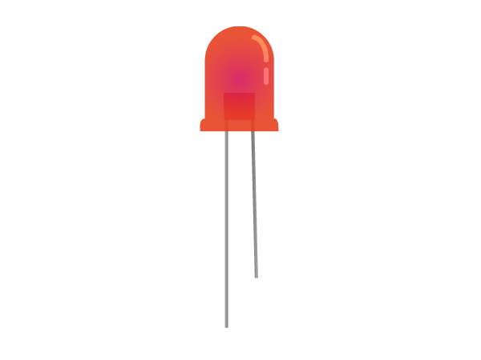
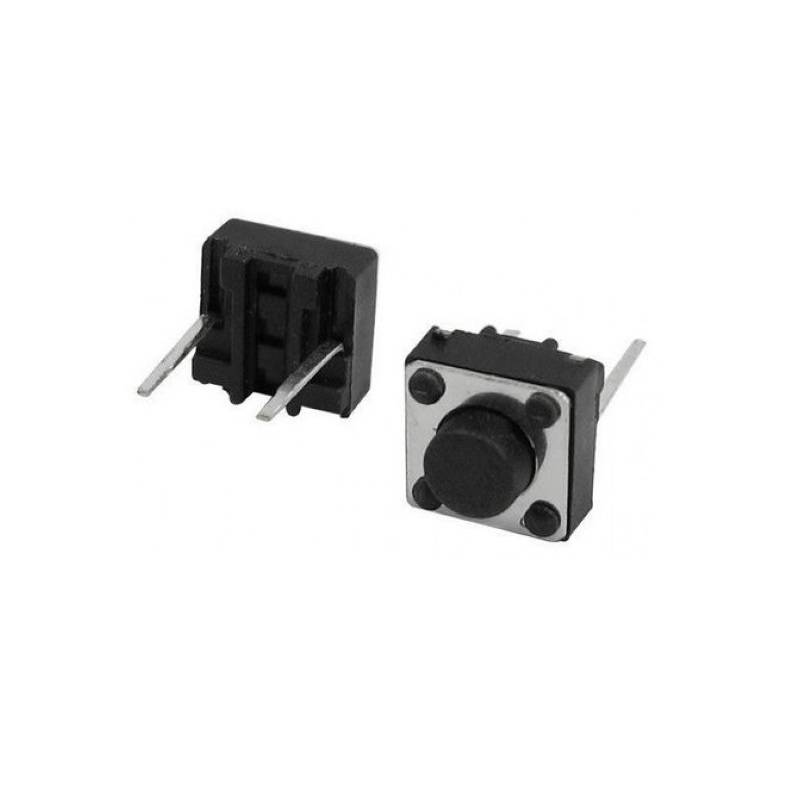
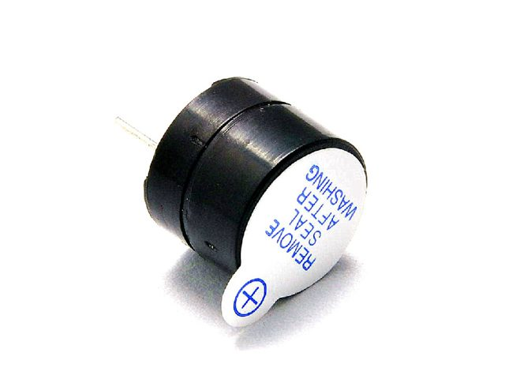
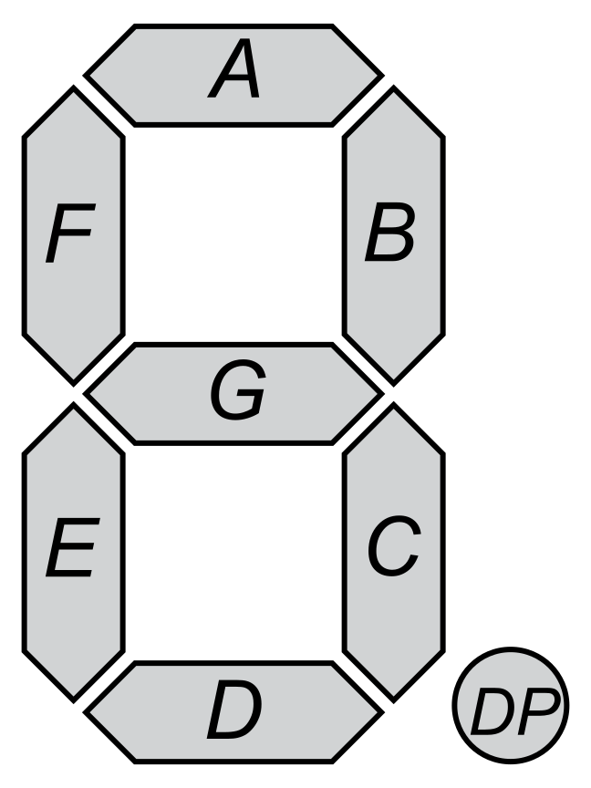
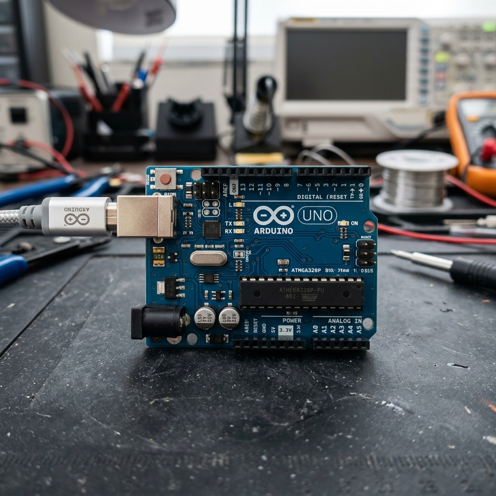
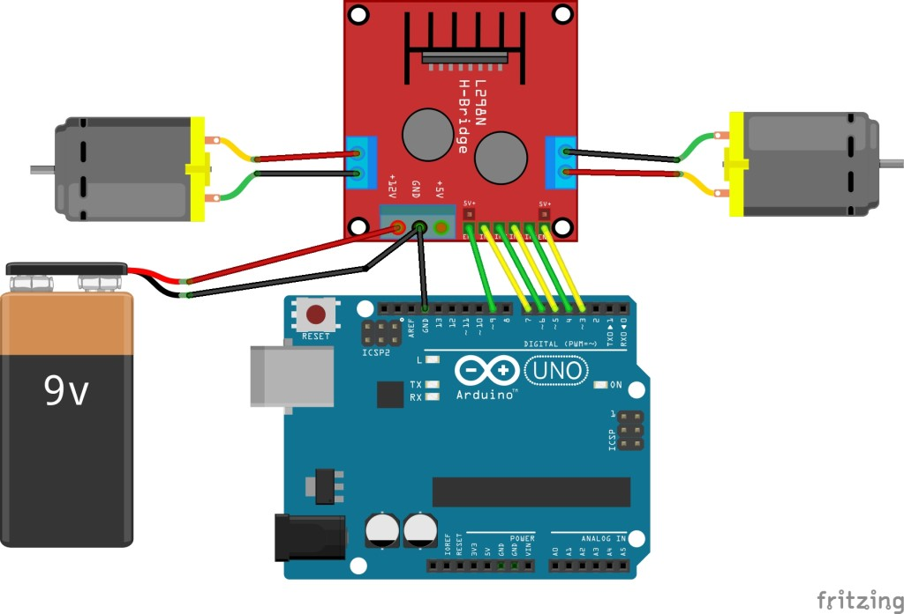
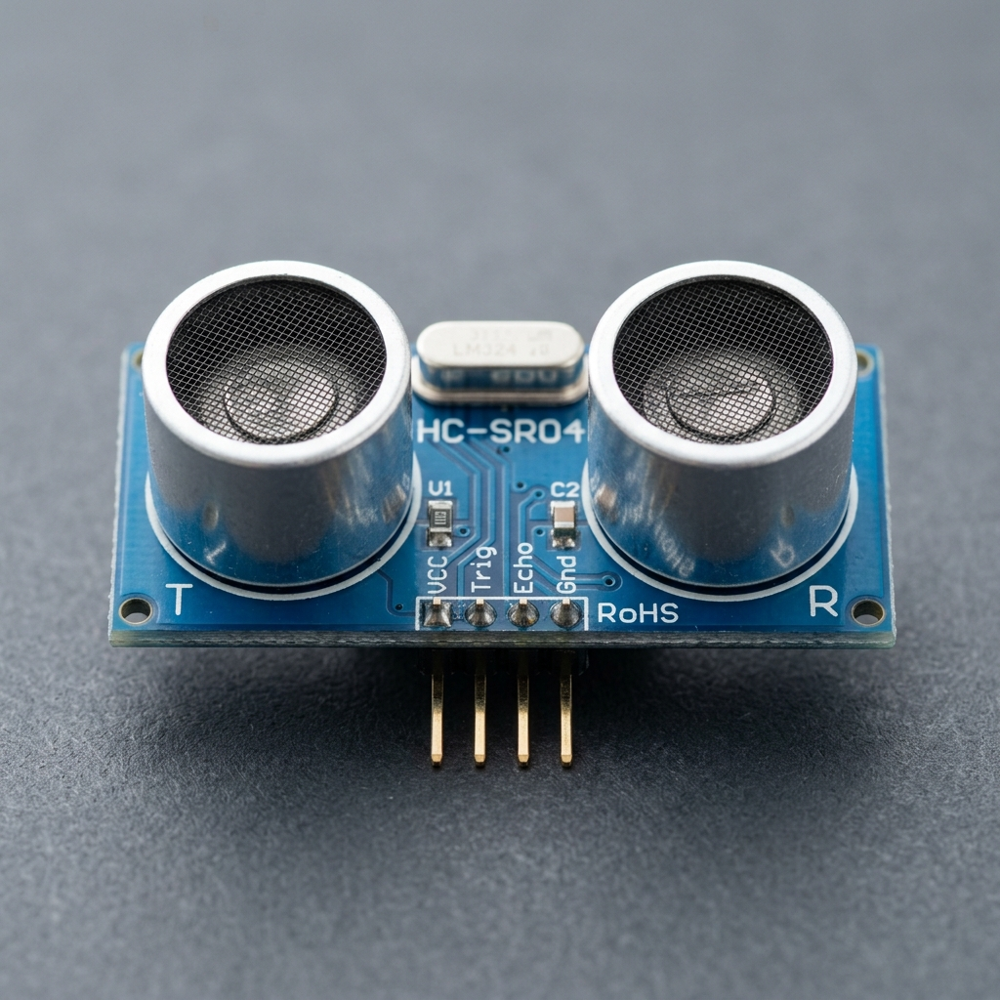

دليل المبتكر الشامل في الروبوتكس والإلكترونيات الذكية
من الصفر حتى صناعة روبوت متنقل ذكي مجهز بحساسات الألتراسونيك والتحكم اللاسلكي عبر البلوتوث للهواتف الذكية.
دليل المبتكر الشامل في الروبوتكس والإلكترونيات الذكية
قسم رئيسي في مسار السينيور • كتيب التعلم الذاتي
(مسار السينيور - Senior Robotics Track: من الصفر إلى صناعة روبوت ذكي متكامل)
◈ كتيب التعليم الذاتي الشامل والتطبيقي (Ages 10-16+)
فهرس المحتويات العام (Table of Contents)
- مقدمة الكتيب ودليل رحلة التعلم الذاتي
- ما هو هذا الكتيب؟
- كيف تدرس وتستفيد كمتعلم ذاتي؟
- قواعد الأمان والسلامة الهندسية في معمل الروبوتكس المنزلي
- خريطة المسار التعليمي (7 مستويات متكاملة)
- دليل الأدوات والمكونات الشامل (Master Hardware & Tools Guide)
- بطاقات تعريفية لكل مكون: الصورة، الاسم، الوظيفة، المواصفات، وتنبيهات الاستخدام.
- الفصل الأول: أساسيات الإلكترونيات والدوائر المفتوحة والمغلقة (Level 1: Electronics 1)
- الفصل الثاني: الحساسات، المحركات، والدوائر المتقدمة (Level 2: Electronics 2)
- الفصل الثالث: مدخل إلى برمجة الأردوينو والمحاكاة (Level 3: Coding Arduino C 1)
- الفصل الرابع: التحكم المنطقي والمشاريع التفاعلية الملموسة (Level 4: Coding Arduino C 2)
- الفصل الخامس: الإشارات التناظرية، الحساسات المتقدمة، والمصفوفات (Level 5: Coding Arduino C 3)
- الفصل السادس: الاتصالات اللاسلكية وتطبيقات الهاتف الذكي (Level 6: Coding Arduino C 4 - Bluetooth & IoT)
- الفصل السابع: الروبوت المتنقل الذكي - المشروع النهائي المتكامل (Level 7: Final Project - Autonomous & RC Robot Car)
- دليل الإجابات النموذجية والتصحيح الذاتي (Answer Key & Self-Correction Guide)
المقدمة ودليل رحلة التعلم الذاتي
قسم رئيسي في مسار السينيور • كتيب التعلم الذاتي
مرحباً بك يا صديقي المبتكر في عالم الروبوتكس والإلكترونيات الحقيقي!
إذا كنت تحمل هذا الكتيب أو تقرأه الآن، فهذا يعني أنك اتخذت قراراً رائعاً: أن تنتقل من خانة المتفرجين إلى خانة الصُنّاع والمخترعين. صُمم هذا الكتيب ليكون بمثابة معلمك الخاص ومرشدك العملي خطوة بخطوة، حيث يأخذ بيدك من المفاهيم الفيزيائية البسيطة للكهرباء وسريان الإلكترونات، وحتى بناء سيارة روبوتية ذاتية القيادة تتحكم بها عبر هاتفك الذكي وتتجنب العوائق بمفردها كسيارات المستقبل!
◈ لماذا يختلف هذا الكتيب عن عروض الشرائح (Slides) التقليدية؟

في قاعات التدريس، يعتمد الشرح على وجود مدرب (Instructor) يشرح بكلماته ويجيب عن التساؤلات لحظياً. أما في التعليم الذاتي (Self-Learning)، فالأمر يتطلب منهجية مختلفة تماماً:
- توضيح أسباب كل خطوة (The Why Behind Everything): لن نطلب منك توصيل سلك أو كتابة سطر برمجي دون أن تفهم بدقة: لماذا وضعناه هنا؟ وماذا يحدث في الدائرة إذا غيرنا مكانه؟
- لغة حوارية تفاعلية مشوقة: تخاطب عقلك وشغفك الهندسي كشاب مبدع، وتستخدم التشبيهات الواقعية لتبسيط المفاهيم المجردة.
- تدرج منطقي خالي من الثغرات: تم دمج وتنسيق كل المفاهيم بحيث يبني كل سطر على ما قبله.
- المشاريع العابرة للفصول (Continuous Projects): إذا بدأنا فكرة في فصل (مثل خزان المياه التناظري أو إشارة المرور)، سنوضح لك كيف تتطور لاحقاً لتصبح مشروعاً ذكياً متصلاً بالأردوينو أو بالبلوتوث، حتى ترى الصورة الكبرى بوضوح.
- نظام التقييم والتصحيح الذاتي: يحتوي كل فصل على واجبات وتحديات حقيقية، مرفقة في نهاية الكتيب بدليل إجابات نموذجي كامل، لتقوم بمحاولة الحل أولاً، ثم مقارنة عملك والتأكد من صحته كمهندس محترف.
◈ خريطة الطريق للمسار (Curriculum Roadmap)
flowchart TD
A["المستوى الأول: أساسيات الإلكترونيات والدوائر البسيطة"] --> B["المستوى الثاني: الحساسات، المحركات، والدوائر المتقدمة"]
B --> C["المستوى الثالث: مدخل إلى الأردوينو والمحاكاة التفاعلية"]
C --> D["المستوى الرابع: التحكم المنطقي والمشاريع التفاعلية الملموسة"]
D --> E["المستوى الخامس: التناظري، الحساسات المتقدمة، والمصفوفات"]
E --> F["المستوى السادس: الاتصالات اللاسلكية وتطبيقات الهاتف (Bluetooth)"]
F --> G["المستوى السابع: الروبوت المتنقل الذكي (المشروع النهائي)"]◈ قواعد الأمان والسلامة الهندسية في معمل الروبوتكس المنزلي ⚠️
قبل أن نلمس أي سلك أو بطارية، تذكر أن المهندس العبقري هو أولاً مهندس يحافظ على سلامته وسلامة أدواته:
- قاعدة فصل الطاقة أثناء التوصيل: لا تقم أبداً بتوصيل أي سلك أو مكون إلكتروني أثناء توصيل الدائرة بالبطارية أو بالحاسوب. ركّب الدائرة وتأكد منها تماماً، ثم قم بتوصيل مصدر الطاقة أخيراً.
- احذر من الدائرة القصيرة (Short Circuit): تجنب ملامسة الطرف الموجب للبطارية بالطرف السالب مباشرة بدون وجود حمل (مقاومة، ليد، موتور)، لأن ذلك يولد حرارة شديدة فورية قد تتلف البطارية أو تسبب احتراقاً.
- التعامل مع بطاريات الليثيوم 18650: بطاريات الليثيوم ممتازة وقوية جداً، ولكن يجب استخدامها دائماً مع الحامل المخصص لها، والتأكد من عدم تركيبها بشكل عكسي (+ مكان -)، وعدم ثقبها أو تعريضها للحرارة.
- قطبية المكونات (Polarity): انتبه للمكونات التي لها طرف موجب وسالب (مثل الدايود الباعث للضوء LED، المكثفات الإلكتروليتية، وموديولات الحساسات). توصيلها بالعكس قد يتلفها فوراً.
- ترتيب ونظافة طاولة العمل: اعمل دائماً على سطح جاف وغير معدني (خشب أو بلاستيك)، وتجنب وجود أي مشروبات أو سوائل بالقرب من مكوناتك الإلكترونية.
دليل الأدوات والمكونات الشامل (Master Hardware & Tools Guide)
قسم رئيسي في مسار السينيور • كتيب التعلم الذاتي
في هذه الحقيبة الهندسية، ستجد مجموعة أدوات متكاملة صُممت خصيصاً لمسار السينيور. دعنا نتعرف على كل قطعة من حيث: اسمها، وظيفتها، مواصفاتها الفنية، وطريقة توصيلها الصحيحة.
| صورة/المكون | المكون (العربي / الإنجليزي) | المواصفات الفنية | الوظيفة ودورها في المسار | نصيحة هندسية وطريقة التوصيل |
|---|---|---|---|---|
⚙️ | لوحة التجارب (Breadboard 830 Points) | 830 نقطة توصيل، مسارات طاقة جانبية، مسارات أفقية في المنتصف | منصة بناء الدوائر بدون لحام. تتيح لك تركيب وفك العناصر وتجربة الدوائر بحرية. | خطوط الـ (+) والـ (-) متصلة طولياً على جانبي اللوحة. أما النقاط الداخلية الخمس في كل صف (a-b-c-d-e) و (f-g-h-i-j) فهي متصلة عرضياً. |
⚙️ | المقاومات الكربونية الثابتة (Carbon Resistors) | قيم مختلفة: 50Ω, 220Ω, 330Ω, 1kΩ, 10kΩ, 50kΩ (0.25 Watt) | حماية المكونات الحساسة (مثل الـ LEDs) من الاحتراق عن طريق تحديد شدة التيار الكهربائي، وتعمل كمقاومات سحب (Pull-up/Pull-down). | ليس لها قطبية (يمكن توصيلها في أي اتجاه). تُقرأ قيمتها بالألوان (أول شريطين أرقام، الثالث عدد الأصفار، الرابع نسبة الخطأ). |
| الدايود الباعث للضوء (5mm LED) | ألوان متعددة (أحمر، أصفر، أخضر، أزرق، أبيض) جهد التشغيل: 1.8V - 3.2V | مؤشر بصري لتحويل الطاقة الكهربائية إلى ضوء. نستخدمها كمخرجات رقمية وتناظرية في كل المشاريع. | له قطبية! الساق الأطول هي الموجب (الأنود Anode) والساق الأقصر أو المقطوعة قليلاً هي السالب (الكاثود Cathode). لا توصله أبداً بمصدر جهد أكبر من 3V بدون مقاومة حماية 220Ω! | |
⚙️ | المقاومة المتغيرة (Rotary Potentiometer) | قيمة قصوى: 1kΩ أو 10kΩ، تحكم دوراني بثلاثة أطراف | تغيير قيمة المقاومة يدوياً عن طريق لف المقبض. تستخدم كخافت إضاءة أو كمتحكم تناظري يقرأه الأردوينو. | الطرفان الخارجيان يوصلان بين (+) و (-)، والطرف الأوسط هو المتغير (Wiper) الذي يخرج جهداً متغيراً من 0 إلى 5V. |
 | المفتاح الضاغط (Push Button 2-Pin) | مفتاح لحظي (Momentary Switch)، يغلق المسار عند الضغط فقط | إدخال رقمي يدوي (Digital Input). عند الضغط يمر التيار، وعند تركه ينقطع المسار. | يوصل على التوالي مع الحمل في الدوائر البسيطة، أو مع مقاومة سحب (Pull-down Resistor) في دوائر الأردوينو لتجنب الإشارات العائمة. |
⚙️ | مفتاح الانزلاق (ON/OFF Switch) | مفتاح ميكانيكي ذو وضعين ثابتين (Latch Switch) | تشغيل وإيقاف التيار بشكل دائم دون الحاجة للاستمرار في الضغط. يستخدم كمفتاح رئيسي للطاقة. | يوصل طرفه الأوسط بمصدر الجهد، وأحد الطرفين الجانبيين بالحمل، وعند تحريك المقبض يتم غلق الدائرة أو فتحها. |
⚙️ | مفتاح الـ DIP المتعدد (DIP Switch 6-Way) | 6 مفاتيح مصغرة مدمجة في شريحة واحدة | التحكم في 6 مسارات مستقلة، يتيح لك تجربة التبديل والتحكم المنطقي في عدة ليدات في آن واحد. | كل رقم عليه مفتاح علوي وسفلي، وهو ممتاز لبناء لوحات تحكم متعددة ومحاكاة البوابات المنطقية. |
⚙️ | مفتاح القصبة المغناطيسي (Reed Switch & Magnet) | أنبوبة زجاجية بداخلها صفيحتان معدنيتان تقتربان عند وجود مغناطيس | استشعار المجال المغناطيسي بدون لمس. يستخدم في أنظمة إنذار الأبواب والنوافذ وعدادات سرعة الدراجات. | زجاجي وحساس جداً! لا تثنِ أطرافه بعنف. عند تقريب المغناطيس تلتصق الصفيحتان ويمر التيار، وعند إبعاده ينفصل المسار. |
⚙️ | المقاومة الضوئية (LDR - Photoresistor 7mm) | مقاومة تتغير قيمتها حسب شدة الضوء الساقط عليها | في الظلام تكون مقاومتها هائلة (مئات الكيلو أوم)، وفي الضوء تنخفض مقاومتها لعدة مئات من الأوم. | أساس مشاريع الإنارة الأوتوماتيكية في الشوارع وكواشف النهار والليل. |
⚙️ | ترانزستور الإشارة (BC547 NPN Transistor) | أقصى جهد 45V، أقصى تيار 100mA، ثلاثة أطراف: Collector, Base, Emitter | مفتاح إلكتروني فائق السرعة ومضخم تيار. بتيار ضعيف جداً على القاعدة (Base) يمرر تياراً كبيراً بين المجمع والباعث. | الوجه المستوي نحوك: الطرف الأيسر C (المجمع)، الأوسط B (القاعدة)، الأيمن E (الباعث). يوصل الباعث عادة بالسالب. |
 | الطنان الصوتي (Active Buzzer 5V) | تردد رنين ثابت ~2.3kHz، صوت تنبيه قوي | مؤشر صوتي للإنذار والتنبيه في أنظمة الحريق وحساسات الركن للروبوت. | له قطبية! الساق الأطول عليها علامة (+) والملصق عليه علامة (+) يوصل بالموجب، والساق الأخرى بالسالب. |
 | شاشة العرض السباعية (7-Segment Display) | 8 ليدات مدمجة (7 للأرقام ونقطة عشرية)، نوع Common Anode | عرض الأرقام من 0 إلى 9 وبعض الحروف اللاتينية. | في نوع Common Anode: الطرف الأوسط العلوي أو السفلي يوصل بموجب 5V، وإضاءة أي قطعة (a-g) تتم بتوصيل طرفها بالسالب عبر مقاومة! |
⚙️ | محرك الألعاب البسيط (Toy DC Motor 5V) | محرك تيار مستمر عالي السرعة ومنخفض العزم | فهم تحولات الطاقة من كهربائية إلى حركية، وتوليد الطاقة كدينامو في تجربة توربين الرياح. | ليس له قطبية ثابتة؛ عكس أطراف البطارية يعكس اتجاه دوران المحرك فوراً. |
⚙️ | محرك التروس للروبوت (DC Geared Motor 1:48) | محرك DC مدمج مع صندوق تروس بلاستيكي بنسبة تخفيض 1:48 | يوفر عزماً هائلاً (Torque) كافياً لتحريك شاسيه الروبوت وحمل وزنه مع تقليل السرعة لتكون قابلة للتحكم. | يستخدم لتدوير عجلات الروبوت ويوصل بمشغل المحركات L298N. |
⚙️ | عجلات الروبوت (Wheels 65mm) | قطر 65 ملم، إطار مطاطي مانع للانزلاق | توفير التماسك مع الأرض وتحويل دوران المحرك إلى حركة خطية للشاسيه. | تثبت مباشرة على العمود المزدوج لمحرك التروس بواسطة سن التثبيت الخاص. |
⚙️ | جهاز القياس المتعدد (Digital Multimeter / AVO) | شاشة رقمية، مجسان (أحمر وأسود)، مفتاح اختيار المدى | قياس الجهد (Volt)، شدة التيار (Ampere)، المقاومة (Ohm)، وفحص الاتصال (Continuity). | المجس الأسود دائماً في منفذ COM، والمجس الأحمر في منفذ V-Ω-mA. لا تقيس التيار بوضعية الجهد أبداً! |
 | لوحة الأردوينو (Arduino UNO R3 + Cable) | معالج ATmega328P، 14 منفذ رقمي (6 تدعم PWM)، 6 منافذ تناظرية، 16MHz | عقل الروبوت المفكر! يستقبل إشارات الحساسات ويتخذ القرارات البرمجية ويتحكم في المخرجات. | يوصل بالحاسوب عبر كابل USB Type-A to Type-B، ويعمل بجهد 5V، أو يغذى خارجياً بجهد 7V-12V عبر منفذ الـ Barrel Jack أو Vin. |
 | مشغل المحركات (L298N Dual H-Bridge Driver) | قنطرة H مزدوجة، تيار يصل إلى 2A لكل محرك، جهد إدخال 5V-35V | التحكم الكامل في اتجاه وسرعة محركين تيار مستمر أو 4 محركات بالتوازي، مع حماية الأردوينو من سحب التيار العالي. | يحتوي على منظم جهد داخلي 5V. يشترط توصيل GND المشغل مع GND الأردوينو (Common Ground)! |
 | حساس الموجات فوق الصوتية (HC-SR04 Ultrasonic) | مدى قياس 2cm - 400cm، زاوية قياس 15 درجة، 4 أطراف: VCC, Trig, Echo, GND | عين الروبوت! يقيس المسافة بينه وبين الحواجز باستخدام صدى الصوت عالي التردد (40kHz). | يرسل نبضة صوتية من Trig ويقيس زمن ارتدادها على Echo. يغذى بـ 5V. |
 | حساس اللهب (Flame Sensor Module) | مستشعر فوتوديود للأشعة تحت الحمراء بطول موجي 760nm - 1100nm | كشف وجود النيران واللهب بزاوية 60 درجة ولمسافة تصل إلى متر. | يحتوي على مخرجين: تناظري (AO) يعطي شدة اللهب، ورقمي (DO) يعطي 0 أو 1 مع إمكانية ضبط الحساسية عبر المقاومة الزرقاء. |
⚙️ | لوحة المفاتيح المصفوفية (4x4 Matrix Keypad) | 16 مفتاحاً مقسمة في 4 صفوف و 4 أعمدة (8 أطراف توصيل) | إدخال الأرقام والحروف والرموز لعمل أنظمة أمان وقفل إلكتروني وتحكم بالروبوت. | تعتمد على تقنية المسح المصفوفي (Multiplexing) لتوفير أطراف الأردوينو، وتبرمج عبر مكتبة Keypad.h. |
⚙️ | موديول البلوتوث (HC-05 / HC-06 Bluetooth) | بروتوكول SPP (Serial Port Profile)، تردد 2.4GHz، مدى يصل 10 أمتار | جسر الاتصال اللاسلكي بين الأردوينو والهاتف الذكي للتحكم بالروبوت واستقبال البيانات. | أطرافه: VCC, GND, TX, RX. تذكر: طرف TX بالموديول يوصل بطرف RX بالأردوينو، وطرف RX بالموديول يوصل بطرف TX بالأردوينو! |
⚙️ | حامل وبطاريات 18650 ليثيوم (Li-ion 3.7V) | بطاريات قابلة للشحن سعة عالية، حامل بطاريات ثنائي أو ثلاثي | توفير طاقة كافية ومستقرة للمحركات والأردوينو (بطاريتان = 7.4V، 3 بطاريات = 11.1V). | المصدر الأساسي لتغذية الروبوت النهائي عبر مشغل المحركات L298N. |
⚙️ | شاسيه الروبوت ومجموعات التثبيت (Car Chassis Kit) | قاعدة أكريليك صلبة، حوامل للمحركات، مسامير وصواميل 3mm، مفك صغير | الهيكل الميكانيكي الحامل لجميع المكونات والبطاريات والعجلات في المشروع النهائي. | يتم تجميعه بدقة باستخدام المسامير والصواميل المرفقة ليضمن ثبات الروبوت وتوازنه أثناء الحركة. |
الفصل الأول: أساسيات الإلكترونيات والدوائر المفتوحة والمغلقة
قسم رئيسي في مسار السينيور • كتيب التعلم الذاتي
(Level 1: Electronics 1 - رحلة في أعماق الذرة والتيار الكهربائي)
◈ نظرة عامة على الفصل ومخرجات التعلم
في هذا الفصل التأسيسي، لن نتعامل مع الإلكترونيات كمعادلات جافة، بل سنرى بالعين المجردة كيف تسري الطاقة الكهربائية داخل لوحة التجارب (Breadboard). ستتعلم كيف تصنع دوائر الإنارة والإنذار بيدك، وكيف تفكر كمهندس إلكترونيات يصمم ويحمي دائرته من التلف.
ماذا ستتقن بعد دراسة هذا الفصل؟
- فهم الطبيعة الذرية للكهرباء (الإلكترونات، الشحنات، وفرق الجهد).
- استخدام لوحة التجارب (Breadboard) وموقع المحاكاة Tinkercad Circuits بكفاءة.
- إتقان قانون أوم ($V = I \times R$) وحساب مقاومات الحماية للـ LEDs لمنع احتراقها.
- التحكم في شدة التيار والجهد باستخدام المقاومات الكربونية والمقاومة المتغيرة (Potentiometer).
- التعامل مع المفاتيح الميكانيكية، مفتاح الـ DIP المتعدد، والمفتاح المغناطيسي (Reed Switch).
- التمييز العملي بين المواد الموصلة والمواد العازلة للكهرباء.
- تشغيل شاشة العرض السباعية (7-Segment Display) ورسم الأرقام يدوياً.
- استخدام حساس الضوء (LDR) والترانزستور (BC547 NPN) كمفتاح إلكتروني ذكي.
◈ المكونات المطلوبة لتجارب هذا الفصل
- لوحة تجارب (Breadboard 830).
- بطاريتان AA (1.5V) مع حامل بطاريات (إجمالي 3V) أو مصدر طاقة 5V.
- ليدات ملونة (LEDs 5mm).
- طنان صوتي (Active Buzzer 5V).
- مقاومات كربونية: 50Ω, 220Ω, 1kΩ, 10kΩ, 47kΩ.
- مقاومة متغيرة دورانية (Potentiometer 10kΩ).
- مفتاح ضاغط (Push Button 2-Pin)، مفتاح منزلق (ON/OFF Switch)، مفتاح DIP (6-way).
- مفتاح مغناطيسي (Reed Switch) مع مغناطيس صغير.
- شاشة عرض سباعية أنود مشترك (7-Segment Display Common Anode).
- مقاومة ضوئية (LDR 7mm).
- ترانزستور BC547 (NPN).
- أسلاك توصيل (Jumper Wires) وملاقط تمساح (Crocodile Wires).
◈ الأساس العلمي النظري (الفيزياء وراء الإلكترونيات)
1. ما هي الكهرباء؟ (الذرة والإلكترون الحر)
تتكون كل مادة في الكون من ذرات (Atoms). في مركز كل ذرة توجد نواة تحتوي على بروتونات (Protons) ذات شحنة موجبة، ونيوترونات (Neutrons) متعادلة الشحنة. وتدور حول هذه النواة جسيمات متناهية الصغر وسريعة جداً تُسمى الإلكترونات (Electrons) وتحمل شحنة سالبة.
في بعض المواد (مثل النحاس والألومنيوم)، تكون الإلكترونات في المدار الخارجي مرتبطة بالنواة بقوة ضعيفة جداً، وتستطيع القفز من ذرة إلى أخرى بسهولة، وتُسمى الإلكترونات الحرة (Free Electrons).
عندما نوفر قوة تدفع هذه الإلكترونات لتتحرك جميعها في اتجاه واحد عبر سلك، ينشأ ما نسميه: التيار الكهربائي (Electric Current)!
[ذرة نحاس] ──(إلكترون حر)──> [ذرة نحاس] ──(إلكترون حر)──> [سريان منظم = تيار كهربائي]2. الثلاثي الذهبي: الجهد، التيار، والمقاومة
لفهم أي دائرة إلكترونية، تخيل أنك تدفع الماء عبر خرطوم مياه:
- الجهد الكهربائي (Voltage - يقاس بالفولت V): هو "ضغط الماء" أو القوة الكهربائية التي تدفع الإلكترونات للخروج من القطب السالب للبطارية متجهة نحو القطب الموجب.
- شدة التيار (Current - يُقاس بالأمبير A أو الملي أمبير mA): هي "كمية الماء المتدفقة" عبر مقطع السلك في الثانية الواحدة.
- المقاومة الكهربائية (Resistance - تُقاس بالأوم $\Omega$): هي "تضييق الخرطوم" أو العائق الذي يمنع تدفق الإلكترونات بحرية ويحول جزءاً من الطاقة الكهربائية إلى حرارة.
قانون أوم العظيم (Ohm\'s Law):
العالم جورج أوم اكتشف علاقة رياضية وثيقة لا تتغير:
$$V = I \times R$$
- كلما زاد الجهد (V)، زاد تدفق التيار (I).
- كلما زادت المقاومة (R)، قل تدفق التيار (I).
3. كيف تقرأ لوحة التجارب (Breadboard) كالمحترفين؟
لوحة التجارب تحتوي على صفائح معدنية دقيقة تحت الفتحات البلاستيكية:
- خطوط التغذية الجانبية (Power Rails): التي تحمل علامة (+) باللون الأحمر وعلامة (-) باللون الأزرق. كل خط متصل طولياً من أول اللوحة إلى آخرها لتوزيع الجهد الأرضي والموجب على كل أجزاء الدائرة.
- نقاط العمل الداخلية (Terminal Strips): مقسمة إلى صفوف أفقية مرقمة (1, 2, 3...) وفي كل صف توجد 5 ثقوب متصلة معاً عرضياً (a, b, c, d, e)، ثم فاصل في المنتصف، ثم 5 ثقوب أخرى متصلة معاً (f, g, h, i, j). هذا الفاصل في المنتصف مصمم خصيصاً لتركيب الدوائر المتكاملة والشاشات دون حدوث قفلة كهربائية بين أطرافها المتقابلة!
◈ المشاريع والتجارب العملية (خطوة بخطوة)
مشروع 1.1: إضاءة أول ليد وبازر مع مفتاح وبطارية 3V
- الهدف: بناء دائرة مغلقة تفاعلية بسيطة وفهم دور المفتاح اللحظي وتوليد إشارة ضوئية وصوتية.
- المكونات: ليد أحمر، مقاومة 220Ω، طنان صوتي 5V، مفتاح ضاغط 2-Pin، بطاريتان AA (3V)، لوحة تجارب.
- المخطط وجدول التوصيل:
- صل الطرف الموجب للبطارية (السلك الأحمر 3V) بالخط الأحمر في اللوحة (+).
- صل الطرف السالب للبطارية (السلك الأسود) بالخط الأزرق (-).
- ضع المفتاح الضاغط بحيث يربط بين الصف 10 والصف 12.
- خذ سلكاً من خط (+) وضعه في الصف 10 (الطرف الأول للمفتاح).
- من الصف 12 (الطرف الثاني للمفتاح)، ضع المقاومة 220Ω لتربطه بالصف 15.
- ضع الساق الطويلة لليد (الأنود +) في الصف 15، والساق القصيرة (الكاثود -) في الخط الأزرق (-).
- وصل البازر بالتوازي مع الليد: الساق الطويلة للبازر (+) في الصف 15، والساق القصيرة (-) في الخط الأزرق (-).
- كيف تختبر الدائرة؟
اضغط على المفتاح: تكتمل الدائرة فيمر التيار وتضيء الليد ويصدر البازر صوتاً رناناً فورياً. عند رفع إصبعك، تنقطع الدائرة فوراً وتنطفئ الليد ويسكت الصوت.
مشروع 1.2: أسرار المقاومات وتدرج شدة الإضاءة
- الهدف: إثبات قانون أوم عملياً بمقارنة سلوك 3 ليدات بقيم مقاومات مختلفة (50Ω, 220Ω, 10kΩ).
- المكونات: 3 ليدات من نفس اللون، 3 مقاومات (50Ω, 220Ω, 10kΩ)، مصدر طاقة 5V أو 3V.
- خطوات التجربة:
- ركّب 3 ليدات على لوحة التجارب في صفوف منفصلة، وصل كاثود كل منها بالخط السالب (-).
- الليد الأولى: صل مع أنودها مقاومة صغيرة (50Ω) متجهة للموجب (+).
- الليد الثانية: صل مع أنودها مقاومة متوسطة (220Ω) متجهة للموجب (+).
- الليد الثالثة: صل مع أنودها مقاومة كبيرة جداً (10kΩ) متجهة للموجب (+).
- الملاحظة والاستنتاج:
- الليد الأولى (50Ω): إضاءة شديدة وقوية جداً لأن المقاومة سمحت بمرور تيار عالٍ.
- الليد الثانية (220Ω): إضاءة قياسية مثالية متوازنة ومريحة للعين وآمنة تماماً.
- الليد الثالثة (10kΩ): إضاءة باهتة وخافتة للغاية تكاد ترى، لأن المقاومة الضخمة خنقت سريان الإلكترونات.
- الخلاصة: كلما زادت المقاومة، انخفض تيار الدائرة والعكس صحيح!
مشروع 1.3: خافت الإضاءة اليدوي بالمقاومة المتغيرة (Potentiometer) ومقاومة الأمان
- الهدف: التحكم بنعومة في شدة إضاءة الليد يدوياً، وفهم دور مقاومة الأمان الثابتة (Safety Resistor).
- المكونات: ليد، مقاومة متغيرة 10kΩ، مقاومة ثابتة 220Ω (أو 50Ω)، بطارية 5V.
- طريقة التوصيل:
- صل الطرف الأول للمقاومة المتغيرة بخط الموجب (+).
- خذ السلك من الطرف الأوسط (Wiper) وصله بأحد طرفي المقاومة الثابتة 220Ω.
- الطرف الآخر للمقاومة الثابتة يذهب إلى أنود الليد (+).
- كاثود الليد (-) يوصل مباشرة بالخط السالب (-).
- سؤال المبتكر الذكي: لماذا أضفنا المقاومة الثابتة 220Ω ولم نوصل المقاومة المتغيرة بمفردها؟
- عندما تدير المقبض إلى أقصى نقطة، تصبح قيمة المقاومة المتغيرة صفراً (0Ω)! لو لم تكن المقاومة الثابتة 220Ω موجودة، ستتصل الليد مباشرة بالبطارية بدون أي مقاومة، مما يؤدي لاحتراقها فوراً. لذلك تسمى هذه المقاومة مقاومة الأمان الثابتة (Safety Resistor).
مشروع 1.4: المفتاح المغناطيسي (Reed Switch) وجهاز إنذار النوافذ
- الهدف: استشعار المجالات المغناطيسية لحماية الأبواب والخزائن.
- المكونات: مفتاح قصبة مغناطيسي (Reed Switch)، مغناطيس، ليد، بازر، مقاومة 220Ω، بطارية 3V.
- طريقة العمل:
المفتاح المغناطيسي يتكون من أنبوبة زجاجية مفرغة تحوي صفيحتين رقيقتين من معدن حديدي مغناطيسي. في الوضع الطبيعي تكون الصفيحتان متباعدتين (دائرة مفتوحة).
- التوصيل والتطبيق:
- صل المفتاح المغناطيسي على التوالي في مسار التغذية الموجبة للدائرة.
- بعد المفتاح، صل مقاومة 220Ω ثم ليد وبازر على التوازي نحو القطب السالب.
- قرّب المغناطيس من الأنبوبة الزجاجية: تنجذب الصفيحتان وتلتصقان ببعضهما فوراً، فتغلق الدائرة وتضيء الليد ويصدر البازر صوته.
- أبعد المغناطيس: تفصل الصفيحتان وينقطع الصوت. (تستخدم هذه الفكرة في حماية المنازل: يثبت المغناطيس على ضلفة النافذة والمفتاح على الإطار!).
مشروع 1.5: مفتاح الـ DIP Switch والمواد الموصلة والعازلة
- الهدف: التحكم في 6 مسارات مستقلة، وبناء فاحص للمواد الموصلة والعازلة (Conductivity Tester).
- المكونات: DIP switch 6-way، 6 ليدات، 6 مقاومات 220Ω، مواد مختلفة للاختبار (مسمار حديد، عملة معدنية، قطعة بلاستيك، خشب، ورق، ماء نقي، ماء بملح).
- التوصيل:
- ضع شريحة الـ DIP switch في منتصف لوحة التجارب بحيث يمتد فوق الفاصل الأوسط.
- وصل الطرف العلوي لكل مفتاح من المفاتيح الستة بخط التغذية الموجب (+).
- من الطرف السفلي لكل مفتاح، ضع مقاومة 220Ω ثم ليد تتجه للخط السالب (-).
- الآن أصبح لديك لوحة تحكم بـ 6 مفاتيح مستقلة تضيء وتطفئ 6 ليدات!
- تجربة فحص المواد (Conductivity Test):
افتح أحد المسارات وضع سلكين مكشوفين. ضع بينهما المواد المختلفة:
- المواد الموصلة (Conductors): مثل المسمار الحديدي والعملة النحاسية والماء المالح -> تضيء الليد فوراً لأنها تحتوي على إلكترونات حرة تمرر التيار.
- المواد العازلة (Insulators): مثل المسطرة البلاستيكية والممحاة والخشب الجاف -> لا تضيء الليد لأن ذراتها تمسك بإلكتروناتها بإحكام وتمنع مرور التيار.
مشروع 1.6: شاشة العرض السباعية (7-Segment Display) في وضع التوصيل المباشر
- الهدف: فهم التركيب الداخلي لشاشة الأرقام وإضاءة الشرائح لتكوين الأرقام والحروف بدون برمجة.
- تشريح الشاشة:
الشاشة تحتوي على 7 ليدات مستطيلة مرتبة على شكل رقم 8، تسمى: a (العلوية), b (أعلى اليمين), c (أسفل اليمين), d (السفلية), e (أسفل اليسار), f (أعلى اليسار), g (الوسطى) بالإضافة إلى النقطة العشرية dp.
في شاشات الأنود المشترك (Common Anode): الطرف الأوسط العلوي أو السفلي متصل بجميع أنودات الليدات الداخلية، ويجب توصيله بالجهد الموجب (+5V). ولإضاءة أي شريحة، يكفي توصيل طرفها بالقطب السالب (-) عبر مقاومة 220Ω!
- جدول إضاءة الأرقام والحروف (Common Anode - التوصيل بالسالب يضيء):
- رقم 1: وصل الطرفين (b, c) بالسالب.
- رقم 3: وصل الأطراف (a, b, g, c, d) بالسالب.
- رقم 7: وصل الأطراف (a, b, c) بالسالب.
- رقم 0: وصل الأطراف (a, b, c, d, e, f) بالسالب (كل الأطراف ما عدا g).
- حرف F: وصل الأطراف (a, f, g, e) بالسالب.
مشروع 1.7: المقاومة الضوئية (LDR) وعمود الإنارة التلقائي
- الهدف: كشف مستويات الضوء وصنع دائرة استشعار تتفاعل مع محيطها.
- المبدأ العلمي: مادة كبريتيد الكادميوم في حساس LDR تطلق إلكترونات عند سقوط الفوتونات الضوئية عليها، مما يقلل مقاومتها في الضوء (تصل إلى ~400Ω)، بينما ترتفع في الظلام إلى مئات الآلاف من الأوم (تصل إلى 1MΩ).
- التجربة:
- صل طرف الـ LDR بموجب البطارية (+).
- صل الطرف الثاني للـ LDR بأنود الليد (+).
- صل كاثود الليد (-) بالخط السالب عبر مقاومة 220Ω.
- في الغرفة المضيئة: تضيء الليد لأن مقاومة LDR منخفضة ويمر التيار.
- غطّ الحساس بإصبعك (ظلام تام): تنطفئ الليد لأن مقاومة LDR قفزت للأعلى فمنعت مرور الإلكترونات!
(في الفصل التالي، سنستخدم الترانزستور لعكس هذا السلوك لتنير الليد في الظلام وتطفئ في الضوء كما في أعمدة إنارة الشوارع الحقيقية!).
مشروع 1.8: الترانزستور (BC547 NPN) كمفتاح إلكتروني فائق السرعة
- الهدف: فهم آلية عمل الترانزستور واستخدامه لتشغيل حمل كبير بإشارة تحكم ضعيفة جداً.
- تشريح الترانزستور BC547:
امسك الترانزستور والوجه المسطح أمامك، الأطراف من اليسار إلى اليمين:
- المجمع (Collector - C): يستقبل التيار القادم من الحمل.
- القاعدة (Base - B): بوابة التحكم الحساسة؛ تيار ضئيل جداً يمر فيها يكفي لفتح الممر.
- الباعث (Emitter - E): يفرغ التيار إلى القطب السالب (GND).
- طريقة التوصيل:
- صل الباعث (E) مباشرة بالخط السالب للبطارية (-).
- صل كاثود الليد (-) بطرف المجمع (C).
- صل أنود الليد (+) بمقاومة 220Ω متصلة بالخط الموجب (+).
- الآن ضع مقاومة 1kΩ متصلة بطرف القاعدة (B).
- خذ سلكاً حراً من الطرف الآخر لمقاومة القاعدة:
- إذا لمسته بالخط السالب (-): تظل الليد مطفأة تماماً (مفتاح مغلق).
- إذا لمسته بالخط الموجب (+): تضيء الليد فوراً بقوة! تيار الميكرو أمبير البسيط القادم للقاعدة سمح لتيار الملي أمبير بالمرور من C إلى E.
◈ واجبات وتحديات الفصل الأول (Homework & Challenges) 📝
- التحدي 1.1: قم بتوصيل دائرة على لوحة التجارب تحتوي على 3 ليدات حمراء متصلة بمصدر جهد 5V، بحيث تكون الليد الأولى بمقاومة 50Ω، والثانية بمقاومة 220Ω، والثالثة بمقاومة 1kΩ. سجّل ملاحظاتك الدقيقة حول درجة سطوع كل ليد وفسر النتيجة وفقاً لقانون أوم.
- التحدي 1.2: صمم دائرة إنذار للأبواب باستخدام المفتاح المغناطيسي (Reed Switch)، بحيث يضيء ليد أحمر ويصدر البازر صوتاً فور اقتراب المغناطيس، وأضف مفتاح ON/OFF رئيسياً للتحكم في تشغيل أو إيقاف نظام الإنذار بالكامل.
- التحدي 1.3: باستخدام المقاومة المتغيرة والليد، صمم دائرة خافت إضاءة يدوي، واشرح رياضياً لماذا نحتاج دائماً لمقاومة ثابتة 50Ω أو 220Ω بالتوالي مع المقاومة المتغيرة لحماية الليد عند وصول المقبض للحد الأدنى؟
- التحدي 1.4: على شاشة العرض السباعية (Common Anode)، اذكر أسماء الأطراف (a, b, c, d, e, f, g) التي يجب توصيلها بالقطب السالب (GND) لإظهار الرقم (5)، والأطراف المطلوبة لإظهار الرقم (9).
- التحدي 1.5: باستخدام مفتاح DIP Switch سداسي المسارات (6-way)، صمم لوحة تحكم تضيء 6 ليدات بألوان مختلفة (2 أحمر، 2 أصفر، 2 أخضر)، وارسم مخطط التوصيل موضحاً مسار التيار الأرضي والموجب.
- التحدي 1.6: صمم دائرة باستخدام الترانزستور BC547 كمفتاح يتحكم في إضاءة ليدين متصلتين بالتوازي، واشرح ماذا يحدث لتيار الليد إذا فصلنا سلك القاعدة (Base) تماماً وتركناه معلقاً في الهواء؟
الفصل الثاني: الحساسات، المحركات، والدوائر المتقدمة
قسم رئيسي في مسار السينيور • كتيب التعلم الذاتي
(Level 2: Electronics 2 - الطاقة الحركية، أجهزة القياس، والتحكم التناظري)
◈ نظرة عامة ومخرجات التعلم
في هذا الفصل، ننتقل من مجرد إضاءة الليدات إلى تحريك الأجسام المادية واستشعار البيئة المحيطة واكتشاف قوانين دوائر التوالي والتوازي. كما سنتعلم كيفية استخدام أداة المهندس الأساسية: الملتيميتر الرقمي (AVO Meter).
ماذا ستتقن بعد دراسة هذا الفصل؟
- فهم تحولات الطاقة في المحركات الكهربائية (من كهربائية إلى حركية والعكس كدينامو).
- التمييز الهندسي بين محرك التيار المستمر العادي (DC Motor) ومحرك التروس (Geared Motor) وتأثير صندوق التروس على العزم والسرعة.
- استخدام جهاز القياس المتعدد (AVO Meter) لقياس الجهد والتيار والمقاومة واختبار الأسلاك.
- فهم فيزياء حساس الموجات فوق الصوتية (HC-SR04) وحساس كشف اللهب (Flame Sensor).
- المقارنة العملية والفيزيائية بين دوائر التوصيل على التوالي (Series) والتوصيل على التوازي (Parallel).
- بناء مشروع خزان المياه التناظري التفاعلي (Water Level Tank Project) باستخدام موصلية السائل.
- معرفة حجر الأساس: كيف سيتحول مشروع الخزان هذا في الفصل السادس إلى نظام ذكي متصل بالأردوينو والبلوتوث!
◈ المكونات المطلوبة لتجارب هذا الفصل
- محرك تيار مستمر عادي (Toy DC Motor 5V).
- محرك تروس مع عجلة روبوت (DC Geared Motor 1:48 + Wheel 65mm).
- مروحة بلاستيكية صغيرة لتوليد طاقة الرياح.
- جهاز قياس رقمي متعدد (Digital Multimeter / AVO Meter).
- موديول حساس اللهب (Flame Sensor Module).
- موديول حساس الموجات فوق الصوتية (HC-SR04).
- مفتاح منزلق (ON/OFF Switch)، مفاتيح ضاغطة (Push Buttons).
- ليدات ملونة (6 ليدات حمراء وصفراء وخضراء).
- مقاومات كربونية متنوعة (220Ω, 1kΩ, 10kΩ).
- بطارية 9V أو بطاريات AA/18650 مع حواملها.
- أسلاك توصيل مع ملاقط تمساح (Crocodile Clips).
- زجاجة بلاستيكية شفافة مقصوصة وماء للاختبار العملي.
◈ الأساس العلمي النظري
1. تحولات الطاقة في المحركات والمولدات (Motors & Dynamos)
المحرك الكهربائي يطبق قانون بقاء الطاقة:
$$\text{طاقة كهربائية (Electrical Energy)} \xrightarrow{\text{محرك DC}} \text{طاقة ميكانيكية حركية (Mechanical Energy)}$$
يعتمد المحرك على تفاعل المجال المغناطيسي الناتج عن المغناطيس الدائم داخل جسم المحرك مع المجال المغناطيسي المتولد من مرور التيار في الملف السلكي الدوار. هذا التفاعل يولد عزماً يدير عمود المحرك.
- عكس الاتجاه: إذا عكست أطراف البطارية (+ مكان -)، ينعكس اتجاه سريان التيار في الملف فوراً، فيدور المحرك في الاتجاه المعاكس!
- مبدأ المولد وتوربين الرياح (Dynamo Principle):
المفاجأة الرائعة هي أن العملية قابلة للعكس تماماً! إذا قمت بتدوير عمود المحرك ميكانيكياً (بواسطة مروحة تدفعها الرياح)، فإن حركة الأسلاك داخل المجال المغناطيسي تولد تياراً كهربائياً على طرفي المحرك تستطيع به إضاءة ليد بدون أي بطارية!
2. محرك الألعاب العادي مقابل محرك التروس (DC Motor vs Geared Motor)
- محرك DC العادي: يدور بسرعة فائقة جداً (قد تصل إلى 6,000 إلى 10,000 دورة في الدقيقة RPM)، لكنه يملك عزماً ضعيفاً جداً (Low Torque). لو لمست عموده بإصبعك سيتوقف فوراً، ولن يستطيع أبداً حمل وزن الروبوت والبطاريات.
- محرك التروس (Geared Motor 1:48): مدمج معه صندوق تروس مصغر (Gearbox). تعمل التروس على خفض السرعة 48 مرة لزيادة عزم الدوران 48 مرة وفق قانون نقل الحركة الميكانيكية:
$$\text{القدرة} = \text{العزم (Torque)} \times \text{السرعة الزاوية (Speed)}$$
لذلك فهو المحرك المثالي المعتمد في الروبوتات المتنقلة ليمنحها القوة على تسلق المنحدرات وحمل المكونات.
3. جهاز الملتيميتر الرقمي (AVO Meter): عين المهندس الخفية
جهاز الـ AVO سمي بهذا الاسم لأنه يجمع قياس ثلاثة عناصر رئيسية:
- A (Ampere): لقياس شدة التيار المار في السلك (يوصل دائماً على التوالي مع الحمل بعد قطع المسار).
- V (Volt): لقياس فرق الجهد الكهربائي بين نقطتين (يوصل على التوازي بملامسة النقطتين دون قطع الدائرة).
- O (Ohm $\Omega$): لقياس قيمة المقاومة الكهربائية أو فحص صلاحية المفاتيح والأسلاك (يستخدم دائماً والدائرة مفصولة تماماً عن الكهرباء).
- وضع فحص الاتصال (Continuity Buzzer): يصدر صفيراً إذا كان السلك سليماً وموصلاً بدون أي قطع داخلي.
4. مختبر التوالي والتوازي (Series vs Parallel)
الفرق بين التوصيلين هو أحد أهم أسرار الهندسة الكهربائية:
| صورة/المكون | وجه المقارنة | التوصيل على التوالي (Series) | التوصيل على التوازي (Parallel) |
|---|---|---|---|
⚙️ | المسار الكهربائي | مسار واحد فقط إجباري لكل الإلكترونات. | عدة مسارات فرعية تتوزع عليها الإلكترونات. |
⚙️ | شدة التيار (Current) | التيار متساوٍ في كل المكونات: $I_{total} = I_1 = I_2$. | التيار الكلي ينقسم على الفروع: $I_{total} = I_1 + I_2$. |
⚙️ | فرق الجهد (Voltage) | الجهد يتجزأ على المكونات: $V_{total} = V_1 + V_2$. | الجهد متساوٍ وثابت على كل الفروع: $V_{total} = V_1 = V_2$. |
⚙️ | تلف أحد المكونات | إذا احترقت ليد واحدة، تنفتح الدائرة وتنطفئ باقي الليدات فوراً! | إذا احترقت ليد في فرع، تظل باقي الفروع تعمل بكفاءة تامة. |
⚙️ | تطبيق المفاتيح | مفتاحان على التوالي يمثلان بوابة المنطق (AND): يجب الضغط عليهما معاً ليمر التيار. | مفتاحان على التوازي يمثلان بوابة المنطق (OR): يكفي الضغط على أي منهما لتشغيل الحمل. |
◈ المشاريع والتجارب العملية
مشروع 2.1: التحكم بمحرك التيار المستمر وتجربة توربين الرياح
- الهدف: التحكم باتجاه حركة المحرك بمفاتيح، ثم تحويل المحرك إلى مولد للطاقة النظيفة.
- التجربة 1 (عكس الاتجاه):
- صل محرك DC ببطارية 3V عبر مفتاح منزلق: يدور المحرك في اتجاه عقارب الساعة (يمين).
- اعكس سلكي المحرك على طرفي البطارية: ينعكس دوران المحرك فوراً عكس عقارب الساعة (يسار).
- التجربة 2 (توربين الرياح لتوليد الكهرباء):
- ثبّت مروحة بلاستيكية صغيرة على عمود محرك DC.
- صل طرفي المحرك بليد أخضر وملاقط تمساح مباشرة (بدون أي بطارية!).
- انفخ بقوة على المروحة أو ضعها أمام مجفف شعر: دوران المروحة يدير ملف المحرك داخل المجال المغناطيسي، فيتولد جهد فوري يضيء الليد بوضوح!
مشروع 2.2: القياسات الدقيقة بالملتيميتر (AVO Meter Hands-on)
- الهدف: إتقان استخدام الملتيميتر لفحص البطاريات، قياس قيم المقاومات المجهولة، والتأكد من هبوط الجهد على الليد.
- الخطوات التطبيقية:
- قياس جهد البطارية:
- وجّه المؤشر الدوار إلى قسم الجهد المستمر ($V_{DC}$) على مدى 20V.
- ضع المجس الأسود على القطب السالب (-) والمجس الأحمر على الموجب (+).
- اقرأ الشاشة: بطارية AA جديدة ستعطيك 1.55V إلى 1.6V، وبطارية 9V ستعطيك ~9.2V.
- قياس المقاومات وفك شفرة الألوان:
- افصل المقاومة عن الدائرة وضع المؤشر على قسم المقاومة ($\Omega$) على مدى 20k أو 2000.
- لامس مجسي الجهاز بطرفي المقاومة: ستظهر قيمتها بدقة (مثلاً مقاومة 220Ω ستعطيك قراءة بين 215Ω و 222Ω بسبب نسبة الخطأ المسموحة).
- قياس الجهد على الليد أثناء التشغيل:
- شغّل دائرة ليد مع مقاومة 220Ω وبطارية 5V.
- ضع المجسين بالتوازي على طرفي الليد: ستلاحظ أن الجهد يثبت عند حوالي 2.0V إلى 2.1V، بينما باقي الجهد (~3.0V) يهبط على المقاومة!
مشروع 2.3: حساس كشف اللهب التناظري (Flame Sensor Alarm)
- الهدف: كشف النيران واستشعار الأشعة تحت الحمراء الناتجة عن الاحتراق.
- المكونات: موديول حساس اللهب، ليد أحمر، بازر 5V، بطارية 5V، ولاعة أو عود ثقاب للاختبار.
- طريقة التوصيل:
- صل طرف VCC بالحساس بموجب 5V، وطرف GND بالحساس بسالب البطارية.
- الحساس يحتوي على مخرج رقمي (DO - Digital Out) ومخرج تناظري (AO - Analog Out).
- صل المخرج الرقمي (DO) بأنود الليد والبازر عبر مقاومة 220Ω، والكاثود بـ GND.
- أدر المقاومة الزرقاء الصغيرة (Potentiometer) على جسم الحساس بمفك صغير حتى ينطفئ الليد تماماً في ظروف الغرفة العادية.
- أشعل عود ثقاب على مسافة 30 سم من الحساس: يستشعر الحساس فوتونات الأشعة تحت الحمراء فوراً، فيخرج إشارة تضيء الليد ويطلق البازر صفارة إنذار حريق فورية!
مشروع 2.4: دراسة فيزيائية لحساس الموجات فوق الصوتية (HC-SR04)
- الهدف: فهم مبدأ صدى الصوت ومحاكاة كيفية رؤية الخفافيش والروبوتات للأجسام.
- فكرة العمل:
- يحتوي الحساس على أسطوانتين معدنيتين تشبهان العينين: الأولى هي المرسل (Transmitter - Trig) وترسل موجات صوتية عالية التردد (40,000 هرتز - لا تسمعها الأذن البشرية).
- الأسطوانة الثانية هي المستقبل (Receiver - Echo) وتنتظر اصطدام الموجات بأي عائق في طريقها وارتدادها إليها.
- بمعرفة سرعة الصوت في الهواء ($340 \text{ m/s}$ أي $0.034 \text{ cm/\mu s}$)، يستطيع الحساس قياس الزمن الذي استغرقته الرحلة ذهاباً وإياباً، وحساب المسافة بدقة سنتيمترية مبهرة! (سنبرمج معادلتها الرياضية عملياً في الفصل الخامس).
مشروع 2.5: مختبر بوابات المنطق بالمفاتيح (AND vs OR Logic Gates)
- الهدف: إدراك كيف تفكر الحواسيب المنطقية من خلال دوائر التوالي والتوازي.
- التجربة أ (بوابة AND - مفتاحان على التوالي):
- صل المفتاح الضاغط الأول على التوالي مع المفتاح الضاغط الثاني وليد ومقاومة 220Ω وبطارية 5V.
- اضغط على المفتاح الأول بمفرده: لا تضيء الليد.
- اضغط على المفتاح الثاني بمفرده: لا تضيء الليد.
- اضغط على المفتاحين معاً في نفس اللحظة: تكتمل الدائرة وتضيء الليد فوراً! هذا هو المنطق الشرطي (AND).
- التجربة ب (بوابة OR - مفتاحان على التوازي):
- صل المفتاحين بالتوازي معاً في المسار المؤدي لليد.
- اضغط على المفتاح الأول: تضيء الليد.
- اضغط على المفتاح الثاني: تضيء الليد.
- اضغط عليهما معاً: تضيء الليد أيضاً! هذا هو المنطق التخييري (OR).
مشروع 2.6: مشروع خزان المياه التفاعلي (Tank Experiment: 6-Level Water Indicator)
- الهدف: قياس منسوب الماء في خزان باستخدام خاصية التوصيلية الكهربائية للماء و 6 ليدات ملونة.
- المكونات: 6 ليدات (2 أخضر للمنسوب المنخفض، 2 أصفر للمنسوب المتوسط، 2 أحمر للمنسوب المرتفع)، 6 مقاومات 220Ω، بطارية 9V أو 12V، 7 أسلاك طويلة، زجاجة ماء بلاستيكية شفافة، لوحة تجارب.
- المخطط الهندسي للتوصيل:
- ركّب الليدات الست على لوحة التجارب بالتوازي.
- صل كاثود كل ليد بالخط السالب للبطارية (-).
- أنود كل ليد يوصل بمقاومة 220Ω، ومن كل مقاومة يخرج سلك قياس طويل يتجه نحو زجاجة الماء.
- ثبّت أسلاك القياس الستة على مسافات رأسية متدرجة داخل الزجاجة (من القاع إلى القمة: سلك 1 عند 2 سم، سلك 2 عند 4 سم، سلك 3 عند 6 سم... وسلك 6 عند فوهة الخزان).
- السلك السابع (السلك الرئيسي) يوصل بالقطب الموجب للبطارية (+) ويثبت في قاع الزجاجة تماماً ليكون مغموراً في الماء دائماً.
- كيف يعمل المشروع؟
- الماء العادي يحتوي على أملاح ذائبة تجعله موصلاً للتيار الكهربائي.
- عندما يكون الخزان فارغاً: لا يوجد ماء يصل بين سلك القاع (+) وأسلاك القياس، فجميع الليدات مطفأة.
- عند سكب الماء ويبدأ بالارتفاع:
- يصل الماء إلى مستوى السلك الأول: يكتمل المسار بين سلك القاع (+) والسلك الأول عبر الماء، فيمر التيار وتضيء الليد الخضراء الأولى!
- يستمر الماء بالارتفاع: تضيء الليد الخضراء الثانية، ثم الليدات الصفراء، وعند امتلاء الخزان تماماً يصل الماء للسلك السادس فتضيء الليد الحمراء الأخيرة محذرة من فيضان الخزان!
◈ واجبات وتحديات الفصل الثاني (Homework & Challenges) 📝
- التحدي 2.1: لديك محرك تيار مستمر (DC Motor) مثبت على سيارة صغيرة، ومفتاحان ضاغطان وبطارية 9V. كيف يمكنك توصيل الدائرة بحيث إذا ضغطت على الزر الأول تدور العجلات للأمام، وإذا ضغطت على الزر الثاني تدور العجلات للخلف؟ (ارسم المخطط النظري لتغيير القطبية).
- التحدي 2.2: إذا كان لديك مصدر جهد 9V، وأردت توصيل 4 ليدات حمراء (جهد تشغيل كل منها 2.0V):
- هل تضيء الليدات بكفاءة إذا وصلتها على التوالي؟ احسب مجموع جهودها ($4 \times 2.0\text{V} = 8.0\text{V}$) وما الجهد المتبقي على المقاومة؟
- ماذا يحدث إذا وصلتها على التوازي؟ وما قيمة المقاومة المناسبة لكل فرع؟
- التحدي 2.3: باستخدام الملتيميتر الرقمي، قم بقياس مقاومة جسمك: امسك المجس الأحمر بإصبع يدك اليمنى والمجس الأسود بإصبع يدك اليسرى والجهاز على وضع $2\text{ M}\Omega$. ما هي القراءة؟ وكيف تتغير القراءة إذا بللت أصابعك بالماء المالح؟ وماذا تستنتج عن موصلية جسم الإنسان؟
- التحدي 2.4: اشرح هندسياً: لماذا نستخدم محرك التروس (Geared Motor) في عجلات الروبوت بدلاً من محرك الألعاب السريع (Toy DC Motor)؟ وما المعادلة الفيزيائية التي توضح العلاقة بين السرعة والعزم؟
- التحدي 2.5: في تجربة توربين الرياح، ما الذي يحدد كمية الجهد الكهربائي المتولد على أطراف المحرك؟ اذكر عاملين أساسيين يمكنك زيادتهما للحصول على جهد أعلى وإضاءة ليدين معاً.
- التحدي 2.6: في دائرة خزان الماء، ماذا يحدث إذا استخدمنا ماء مقطراً نقياً خالياً تماماً من الأملاح (Deionized Water)؟ هل ستضيء الليدات؟ ولماذا؟
- التحدي 2.7: باستخدام مفتاحين ضاغطين وبازر، صمم دائرة إنذار بنكية لا تطلق الصوت إلا إذا ضغط الموظف الأول والمدير في نفس اللحظة (بوابة AND)، ودائرة إنذار طوارئ أخرى تطلق الصوت إذا ضغط أي شخص على أي من الزرين (بوابة OR).
- التحدي 2.8: صمم دائرة كاشف حريق ذكية تجمع بين حساس اللهب وبازر وليد أحمر يعملان كإنذار عند حدوث لهب، مع إضافة مفتاح كتم صوت للإنذار.
الفصل الثالث: مدخل إلى برمجة الأردوينو والمحاكاة التفاعلية
قسم رئيسي في مسار السينيور • كتيب التعلم الذاتي
(Level 3: Coding Arduino C 1 - عندما تمنح الدائرة الإلكترونية عقلاً يفكر!)
◈ نظرة عامة ومخرجات التعلم
في هذا الفصل، ستخطو خطوتك الأولى في عالم البرمجة المدمجة (Embedded Systems) باستخدام أشهر منصة روبوتكس في العالم: Arduino UNO. سنبدأ عبر بيئة المحاكاة الافتراضية Tinkercad Circuits لنتدرب بأمان ونفهم أسرار كتابة الأكواد بلغة C++، وكيف تتحول أسطر الكود البرمجية إلى نبضات كهربائية تحرك العالم المادي.
ماذا ستتقن بعد دراسة هذا الفصل؟
- تشريح لوحة الأردوينو أونو (المعالج، المنافذ الرقمية والتناظرية، الطاقة).
- بناء الدوائر وبرمجتها واختبارها افتراضياً على موقع Tinkercad Circuits.
- الهيكل البنائي لكود الأردوينو: الدالتان الأساسيتان
void setup()وvoid loop(). - استخدام المتغيرات وأنواع البيانات (
int,float,char,bool). - التحكم في المخرجات الرقمية (
digitalWrite) وتوليد وميض الليدات بأزمنة دقيقة (delay). - قراءة المدخلات الرقمية (
digitalRead) وأهمية مقاومة السحب لأسفل (Pull-Down Resistor). - التحكم المنطقي في تشغيل وإطفاء الأحمال بواسطة زرين ضاغطين.
- برمجة شاشة العرض السباعية (7-Segment Display) لعد الأرقام تصاعدياً من 0 إلى 9.
- فهم تقنية تعديل عرض النبضة (Pulse Width Modulation - PWM) والتحكم التناظري (
analogWrite). - قراءة الحساسات التناظرية ومراقبة البيانات عبر شاشة الاتصال التسلسلي (Serial Monitor).
◈ المكونات المطلوبة لمحاكاة وتطبيق هذا الفصل
- لوحة أردوينو أونو (Arduino UNO R3) مع كابل USB.
- لوحة تجارب (Breadboard).
- 3 ليدات ملونة (أحمر، أصفر، أخضر) ومقاومات حماية 220Ω.
- مفتاحان ضاغطان (Push Buttons 2-Pin) ومقاومتان 10kΩ (Pull-Down).
- شاشة عرض سباعية أنود مشترك (7-Segment Common Anode).
- مقاومة متغيرة دورانية (Potentiometer 10kΩ).
- أسلاك توصيل ذكر-ذكر (Male-to-Male Jumper Wires).
◈ الأساس العلمي والبرمجي النظري
1. ما هو الأردوينو؟ (المتحكم الدقيق Microcontroller)
الأردوينو ليس حاسوباً عادياً مثل حاسوبك الشخصي؛ إنه متحكم دقيق (Microcontroller Board) مصمم للتفاعل المباشر والفوري مع العالم المادي.
- المعالج الرئيسي (ATmega328P): هو العقل المركزي؛ يعمل بتردد 16 ميجاهرتز (ينفذ 16 مليون تعليمة في الثانية!).
- المنافذ الرقمية (Digital I/O Pins - من 0 إلى 13): منافذ يمكنها العمل كـ مدخلات (Inputs) تستشعر حالتين فقط: جهد 5V (وتعني منطقياً 1 أو HIGH) أو جهد 0V (وتعني منطقياً 0 أو LOW). كما يمكنها العمل كـ مخرجات (Outputs) لإرسال 5V أو 0V لتشغيل الليدات والبوازر والريليهات.
- منافذ الـ PWM (تحمل علامة تيلدا ~ وهي 3, 5, 6, 9, 10, 11): منافذ رقمية خاصة يمكنها توليد نبضات تحاكي الإشارات التناظرية للتحكم بالسرعة وشدة الإضاءة.
- المنافذ التناظرية (Analog In Pins - من A0 إلى A5): منافذ متصلة بمحول تناظري رقمي (ADC) بدقة 10-bit، تحول الجهد المستمر من 0V إلى 5V إلى قيم رقمية من 0 إلى 1023 (ممتازة لقراءة الحساسات والمقاومة المتغيرة).
- منافذ الطاقة (Power): مخرج 5V ثابت، مخرج 3.3V، ومنفذ الأرضي GND (المرجع الصفري لكل الدوائر).
2. كيف تفتح حساباً وتبني مشروعاً على Tinkercad Circuits؟
- افتح المتصفح واذهب إلى www.tinkercad.com.
- سجل دخولك واضغط على قسم Designs ثم اختر Circuits ثم Create New Circuit.
- من القائمة الجانبية اليمنى، اسحب لوحة
Arduino Uno R3ولوحةBreadboard Small. - اضغط على زر Code في الأعلى واختر وضع Text لتكتب كود C++ الحقيقي.
- بعد توصيل الدائرة وكتابة الكود، اضغط Start Simulation لترى دائرتك تعمل أمامك حياً!
3. تشريح كود الأردوينو (The Anatomy of Arduino Sketch)
أي برنامج للأردوينو يتكون حتماً من جزأين رئيسيين:
// 1. منطقة التعريفات العامة (Global Declarations):
// هنا نحدد أرقام المنافذ والمتغيرات قبل بدء البرنامج
int ledPin = 13;
// 2. دالة الإعداد والتهيئة (Setup Function):
// تنفذها بوردة الأردوينو لمرة واحدة فقط عند تشغيلها أو الضغط على زر Reset
void setup() {
pinMode(ledPin, OUTPUT); // نخبر المعالج أن هذا المنفذ مخرج كهربائي
}
// 3. دالة الحلقة التكرارية اللانهائية (Loop Function):
// بعد انتهاء setup، يدخل المعالج في هذه الدالة ويكرر الأوامر بداخلها إلى الأبد
void loop() {
digitalWrite(ledPin, HIGH); // أرسل 5 فولت (أضئ الليد)
delay(1000); // انتظر لمدة 1000 ملي ثانية (ثانية واحدة)
digitalWrite(ledPin, LOW); // اقطع الجهد إلى 0 فولت (أطفئ الليد)
delay(1000); // انتظر ثانية واحدة
}◈ المشاريع والتجارب البرمجية العملية
مشروع 3.1: وميض الليد الأول والتحكم في 3 ليدات بتسلسلات مختلفة
- المخطط:
- صل كاثود كل ليد (-) بالخط السالب للوحة التجارب، ثم صل الخط السالب بمنفذ GND في الأردوينو.
- صل أنود الليد الأولى (أحمر) عبر مقاومة 220Ω بالمنفذ الرقمي 13.
- صل أنود الليد الثانية (أصفر) عبر مقاومة 220Ω بالمنفذ الرقمي 12.
- صل أنود الليد الثالثة (أخضر) عبر مقاومة 220Ω بالمنفذ الرقمي 11.
- الكود البرمجي (Blink 3 LEDs Sequence):
// تعريف أسماء المنافذ لتسهيل قراءة الكود
int redLed = 13;
int yellowLed = 12;
int greenLed = 11;
void setup() {
// تهيئة المنافذ الثلاثة كمخرجات
pinMode(redLed, OUTPUT);
pinMode(yellowLed, OUTPUT);
pinMode(greenLed, OUTPUT);
}
void loop() {
// تضيء الليدات بالتتابع واحدة تلو الأخرى
digitalWrite(redLed, HIGH);
delay(500);
digitalWrite(redLed, LOW);
digitalWrite(yellowLed, HIGH);
delay(500);
digitalWrite(yellowLed, LOW);
digitalWrite(greenLed, HIGH);
delay(500);
digitalWrite(greenLed, LOW);
}مشروع 3.2: قراءة المدخلات الرقمية (زر ضاغط وليد) وسر مقاومة السحب لأسفل
- الهدف: قراءة حالة زر ضاغط بواسطة الأردوينو واتخاذ قرار بتشغيل الليد.
- سر هندسي: لماذا نحتاج مقاومة سحب لأسفل (Pull-Down Resistor 10kΩ)؟
عندما تترك الزر مفصولاً، يكون طرف مدخل الأردوينو معلقاً في الهواء (Floating Pin). الأردوينو حساس جداً لدرجة أنه قد يلتقط الموجات الكهرومغناطيسية السابحة في الغرفة ويقرأ قيماً عشوائية (مرة 1 ومرة 0)!
لذلك نصل مدخل الزر بمقاومة 10kΩ متجهة للـ GND، لتسحب الجهد بثبات إلى الصفر (LOW) طالما لم يضغط أحد، وعند الضغط يصل 5V فتصبح القراءة (HIGH) يقيناً!
- التوصيل:
- طرف الزر الأول متصل بـ 5V.
- طرف الزر الثاني متصل بالمنفذ الرقمي 2، وبنفس الوقت متصل بمقاومة 10kΩ متجهة للـ GND.
- ليد مع مقاومة 220Ω على المنفذ 13.
- الكود البرمجي:
int buttonPin = 2;
int ledPin = 13;
int buttonState = 0; // متغير لتخزين قراءة الزر
void setup() {
pinMode(buttonPin, INPUT); // المنفذ 2 مدخل
pinMode(ledPin, OUTPUT); // المنفذ 13 مخرج
}
void loop() {
buttonState = digitalRead(buttonPin); // اقرأ حالة الزر (HIGH أو LOW)
if (buttonState == HIGH) {
digitalWrite(ledPin, HIGH); // إذا ضُغط الزر، أضئ الليد
} else {
digitalWrite(ledPin, LOW); // إذا لم يضغط، أطفئ الليد
}
}مشروع 3.3: التحكم بزرين (زر تشغيل وزر إطفاء منفصلين)
- الفكرة: استخدام زر لتشغيل الليد وجعلها تبقى مضاءة حتى لو تركت الزر، وزر آخر لإطفائها.
- التوصيل:
- زر 1 (تشغيل) على المنفذ 2 مع مقاومة سحب 10kΩ للـ GND.
- زر 2 (إطفاء) على المنفذ 3 مع مقاومة سحب 10kΩ للـ GND.
- ليد على المنفذ 13.
- الكود البرمجي:
int onButton = 2;
int offButton = 3;
int ledPin = 13;
void setup() {
pinMode(onButton, INPUT);
pinMode(offButton, INPUT);
pinMode(ledPin, OUTPUT);
}
void loop() {
if (digitalRead(onButton) == HIGH) {
digitalWrite(ledPin, HIGH); // تشغيل
}
if (digitalRead(offButton) == HIGH) {
digitalWrite(ledPin, LOW); // إطفاء
}
}مشروع 3.4: عداد الأرقام من 0 إلى 9 بشاشة العرض السباعية (7-Segment Counter)
- الهدف: برمجة شاشة 7-Segment (نوع Common Anode) لتعرض الأرقام تصاعدياً من 0 إلى 9 بتأخير ثانية.
- التوصيل بالأردوينو:
- الطرف الأوسط للشاشة (COM) يوصل بمنفذ 5V.
- الأطراف (a, b, c, d, e, f, g) توصل بالمنافذ الرقمية من 2 إلى 8 بالترتيب عبر مقاومات 220Ω.
(تذكر: في شاشة Common Anode، إرسال LOW يضيء الشريحة، وإرسال HIGH يطفئها!).
- الكود البرمجي:
// تعريف المنافذ المتصلة بالشرائح السبع
int a = 2, b = 3, c = 4, d = 5, e = 6, f = 7, g = 8;
void setup() {
for (int pin = 2; pin <= 8; pin++) {
pinMode(pin, OUTPUT);
digitalWrite(pin, HIGH); // إطفاء جميع الشرائح في البداية
}
}
// دالة مساعدة لعرض رقم 0
void showZero() {
digitalWrite(a, LOW); digitalWrite(b, LOW); digitalWrite(c, LOW);
digitalWrite(d, LOW); digitalWrite(e, LOW); digitalWrite(f, LOW);
digitalWrite(g, HIGH); // شريحة g مطفأة
}
// دالة لعرض رقم 1
void showOne() {
digitalWrite(a, HIGH); digitalWrite(b, LOW); digitalWrite(c, LOW);
digitalWrite(d, HIGH); digitalWrite(e, HIGH); digitalWrite(f, HIGH);
digitalWrite(g, HIGH);
}
void loop() {
showZero();
delay(1000);
showOne();
delay(1000);
// وهكذا لباقي الأرقام...
}مشروع 3.5: تقنية تعديل عرض النبضة (PWM) وخافت الإضاءة التدريجي
- السر العلمي للـ PWM:
المتحكمات الرقمية لا تستطيع إخراج جهد تناظري حقيقي (مثل 2.3V)، بل تخرج إما 0V أو 5V. للتحكم بشدة إضاءة الليد، تقوم تقنية PWM (تعديل عرض النبضة) بتشغيل وإطفاء الجهد مئات المرات في الثانية بسرعة هائلة تفوق قدرة العين على الملاحظة!
- إذا كان الجهد يعمل 50% من الوقت ومطفأ 50% من الوقت، فإن الليد تبدو لعينك مضاءة بنصف سطوعها كأنها تتلقى 2.5V!
- نستخدم الدالة
analogWrite(pin, value)حيث تكون القيمة بين 0 (مطفأة تماماً 0V) و 255 (إضاءة كاملة 5V). - الكود البرمجي (LED Fading on PWM Pin 9):
int ledPin = 9; // منفذ 9 يدعم PWM وعلامته ~
void setup() {
pinMode(ledPin, OUTPUT);
}
void loop() {
// زيادة الإضاءة تدريجياً
for (int brightness = 0; brightness <= 255; brightness += 5) {
analogWrite(ledPin, brightness);
delay(30);
}
// خفض الإضاءة تدريجياً
for (int brightness = 255; brightness >= 0; brightness -= 5) {
analogWrite(ledPin, brightness);
delay(30);
}
}مشروع 3.6: قراءة المقاومة المتغيرة وعرض البيانات على الـ Serial Monitor
- الهدف: قراءة قيمة تناظرية من حساس أو مقاومة متغيرة وطباعتها على شاشة الحاسوب.
- التوصيل:
- طرفا المقاومة المتغيرة الخارجيان إلى 5V و GND.
- الطرف الأوسط (Wiper) إلى منفذ الإدخال التناظري A0.
- الكود البرمجي:
int potPin = A0;
int potValue = 0;
void setup() {
Serial.begin(9600); // بدء الاتصال التسلسلي بسرعة 9600 باود
}
void loop() {
potValue = analogRead(potPin); // قراءة القيمة التناظرية (من 0 إلى 1023)
Serial.print("قراءة المقاومة المتغيرة: ");
Serial.println(potValue); // طباعة القيمة مع سطر جديد
delay(200); // تأخير بسيط لراحة العين أثناء القراءة
}◈ واجبات وتحديات الفصل الثالث (Homework & Challenges) 📝
- التحدي 3.1 (HW 1): قم بكتابة كود أردوينو يتحكم في 3 ليدات (أحمر، أصفر، أخضر) بحيث تضيء الليد الأولى ثانية ثم تطفئ، ثم تضيء الليد الثانية ثانية وتطفئ، ثم تضيء الليد الثالثة ثانية وتطفئ، ثم تضيء الليدات الثلاث معاً لمدة ثانيتين وتطفئ في نفس اللحظة!
- التحدي 3.2 (HW 2): صمم دائرة زر ضاغط مع ليد بحيث: إذا لم يتم الضغط على الزر، تومض الليد ببطء (تضيء ثانية وتطفئ ثانية)، وإذا ضغطت على الزر تومض الليد بسرعة فائقة جداً (100 ملي ثانية إضاءة و 100 ملي ثانية إطفاء).
- التحدي 3.3 (HW 3): اكتب كوداً لشاشة العرض السباعية (7-Segment Display) لتقوم بالعد التنازلي من الرقم 3 إلى الرقم 0، مع تشغيل صوت بازر قصير عند كل رقم، وعند الوصول إلى الرقم صفر يصدر البازر صوتاً طويلاً لمدة ثانيتين.
- التحدي 3.4 (HW 4): باستخدام المقاومة المتغيرة المتصلة بالمنفذ A0 وليد متصل بالمنفذ 9 (PWM)، اكتب كوداً يجعل شدة سطوع الليد تتغير لحظياً تزامناً مع دوران مقبض المقاومة المتغيرة. (تلميح: استخدم دالة map لتحويل المدى من 0-1023 إلى 0-255).
الفصل الرابع: التحكم المنطقي والمشاريع التفاعلية الملموسة
قسم رئيسي في مسار السينيور • كتيب التعلم الذاتي
(Level 4: Coding Arduino C 2 - الانتقال إلى الهاردوير الحقيقي ومشاريع المدن الذكية)
◈ نظرة عامة ومخرجات التعلم
في هذا الفصل، ننتقل من شاشات المحاكاة إلى أرض الواقع: ستقوم بتوصيل لوحة الأردوينو الحقيقية بحاسوبك، وتثبيت بيئة التطوير الرسمية (Arduino IDE)، وضبط تعريفات منافذ الاتصال (CH340 Driver). كما سنبني مشروعاً حقيقياً متكاملاً من مشاريع المدن الذكية: إشارة المرور التفاعلية مع عداد المشاة التنازلي.
ماذا ستتقن بعد دراسة هذا الفصل؟
- تثبيت وضبط برنامج Arduino IDE واختيار البوردة ومنفذ الـ COM الصحيح.
- تثبيت مشغل المنافذ التسلسلية CH340 للأردوينو التجاري.
- قراءة ومعالجة رسائل الأخطاء البرمجية الشائعة (Syntax & Compilation Errors).
- الاحتراف في كتابة الشروط المركبة (
if,else if,else) والمعاملات المنطقية (&&,||). - بناء مشروع إشارة المرور الحقيقية بدقة التوقيتات القياسية.
- التبديل المنطقي بالزر الضاغط الفردي (Toggle Logic) وتتبع الحالات البرمجية.
- كتابة الدوال الخاصة (Functions) لتنظيم الأكواد المعقدة واختصار المئات من الأسطر.
- المشروع التكاملي: دمج إشارة المرور الثلاثية مع شاشة 7-Segment لعمل إشارة مرور ذكية للمشاة والسيارات معاً!
◈ الانتقال إلى الهاردوير الحقيقي: خطوة بخطوة 🛠️
1. تثبيت برنامج Arduino IDE
- حمّل النسخة الرسمية المجانية من موقع arduino.cc/en/software.
- ثبّت البرنامج على جهازك وافتحه؛ ستظهر لك النافذة الرئيسية مع كود افتراضي يحوي
setup()وloop().
2. تثبيت مشغل الشريحة التسلسلية (CH340 Driver)
تحتوي أغلب بوردات الأردوينو المتداولة على شريحة وسيطة للاتصال بالـ USB تسمى CH340. إذا قمت بتوصيل الأردوينو بالحاسوب ولم يتعرف عليه:
- افتح المجلد المرفق في كورس السينيور (
Robotics level 4/session 1)، ستجد ملفاً باسمCH34x_Install_Windows_v3_4.EXE. - شغّل الملف واضغط INSTALL. خلال 5 ثوانٍ ستظهر لك رسالة "Driver install success!".
- الآن عند توصيل الأردوينو بمنفذ USB في جهازك، سيتعرف عليه الويندوز فوراً.
3. إعدادات رفع الكود (Tools Menu)
قبل الضغط على زر السهم (Upload) لرفع الكود، تأكد من خطوتين أساسيتين في قائمة Tools:
- Board: اختر Arduino Uno.
- Port: اختر المنفذ المكتوب بجانبه (Arduino Uno) أو منفذ الـ COM ذو الرقم الأعلى (مثلاً COM3 أو COM5).
- اضغط الآن على زر Upload (علامة السهم المتجه لليمين): ستومض ليدات TX و RX على لوحة الأردوينو لثوانٍ معدودة، ثم تظهر لك رسالة باللون الأخضر في الأسفل: "Done uploading"! تهانينا، برنامجك يعمل الآن على عتاد حقيقي!
◈ المشاريع والتطبيقات الواقعية
مشروع 4.1: إشارة المرور القياسية (Standard Traffic Light)
- المكونات: 3 ليدات (أحمر، أصفر، أخضر)، 3 مقاومات 220Ω، لوحة تجارب، أردوينو.
- التوصيل:
- كاثود الليدات الثلاث موصل بالـ GND.
- أنود الليد الأحمر -> منفذ 12.
- أنود الليد الأصفر -> منفذ 11.
- أنود الليد الأخضر -> منفذ 10.
- المنطق الواقعي للمرور:
- الضوء الأخضر يعمل لمدة 5 ثوانٍ (السيارات تتحرك).
- الضوء الأصفر يضيء ثانية ونصف للتحذير والاستعداد.
- الضوء الأحمر يعمل لمدة 5 ثوانٍ (السيارات تتوقف تماماً).
- الكود البرمجي:
int redPin = 12;
int yellowPin = 11;
int greenPin = 10;
void setup() {
pinMode(redPin, OUTPUT);
pinMode(yellowPin, OUTPUT);
pinMode(greenPin, OUTPUT);
}
void loop() {
// 1. الضوء الأخضر
digitalWrite(greenPin, HIGH);
delay(5000);
digitalWrite(greenPin, LOW);
// 2. الضوء الأصفر (تحذير)
digitalWrite(yellowPin, HIGH);
delay(1500);
digitalWrite(yellowPin, LOW);
// 3. الضوء الأحمر (توقف)
digitalWrite(redPin, HIGH);
delay(5000);
digitalWrite(redPin, LOW);
}مشروع 4.2: التحكم المنطقي الشرطي بزرين للسرعة (Speed Control with 2 Buttons)
- الفكرة: لدينا ليد تومض باستمرار؛ إذا ضغطت على الزر الأول تومض ببطء، وإذا ضغطت على الزر الثاني تومض بسرعة، مع تذكر آخر وضع تم اختياره.
- الكود البرمجي:
const int ledPin = 12;
const int pbSlow = 7;
const int pbFast = 13;
int blinkSpeed = 1000; // القيمة الافتراضية ثانية واحدة
void setup() {
pinMode(ledPin, OUTPUT);
pinMode(pbSlow, INPUT);
pinMode(pbFast, INPUT);
}
void loop() {
// فحص أزرار التحكم وتغيير المتغير
if (digitalRead(pbSlow) == HIGH) {
blinkSpeed = 1000; // وضع الوميض البطيء
}
else if (digitalRead(pbFast) == HIGH) {
blinkSpeed = 150; // وضع الوميض السريع
}
// تنفيذ الوميض بناءً على السرعة الحالية
digitalWrite(ledPin, HIGH);
delay(blinkSpeed);
digitalWrite(ledPin, LOW);
delay(blinkSpeed);
}مشروع 4.3: البرمجة الاحترافية لشاشة 7-Segment بالدوال (Modular Functions)
- المشكلة البرمجية: إذا أردنا كتابة كود لعرض الأرقام من 0 إلى 9 بدون دوال، سنحتاج لكتابة أكثر من 150 سطراً مكرراً تجعل الكود فوضوياً وصعب التعديل.
- الحل الهندسي: إنشاء دوال منفصلة لكل رقم واستدعاؤها باسمها!
- الكود البرمجي المنظم:
int a = 2, b = 3, c = 4, d = 5, e = 6, f = 7, g = 8;
void setup() {
for (int i = 2; i <= 8; i++) pinMode(i, OUTPUT);
}
// دالة إطفاء جميع الشرائح
void clearSegments() {
digitalWrite(a, HIGH); digitalWrite(b, HIGH); digitalWrite(c, HIGH);
digitalWrite(d, HIGH); digitalWrite(e, HIGH); digitalWrite(f, HIGH);
digitalWrite(g, HIGH);
}
// دالة عرض الرقم
void displayDigit(int num) {
clearSegments();
switch (num) {
case 0:
digitalWrite(a, LOW); digitalWrite(b, LOW); digitalWrite(c, LOW);
digitalWrite(d, LOW); digitalWrite(e, LOW); digitalWrite(f, LOW);
break;
case 1:
digitalWrite(b, LOW); digitalWrite(c, LOW);
break;
case 2:
digitalWrite(a, LOW); digitalWrite(b, LOW); digitalWrite(g, LOW);
digitalWrite(e, LOW); digitalWrite(d, LOW);
break;
case 3:
digitalWrite(a, LOW); digitalWrite(b, LOW); digitalWrite(g, LOW);
digitalWrite(c, LOW); digitalWrite(d, LOW);
break;
// وبالمثل لبقية الأرقام من 4 إلى 9
}
}
void loop() {
for (int count = 0; count <= 3; count++) {
displayDigit(count);
delay(1000);
}
}مشروع 4.4: المشروع التكاملي: إشارة مرور المشاة التفاعلية مع عداد تنازلي (Smart Pedestrian Crossing)
- أهمية المشروع الهندسية:
هذا المشروع يدمج كل ما تعلمته في الفصول السابقة في نظام ذكي حقيقي كالذي تراه في المدن الكبرى:
- تكون إشارة السيارات خضراء (السيارات تمشي)، وشاشة المشاة مطفأة أو حمراء.
- عندما تقترب إشارة السيارات من الإغلاق، يتحول ضوء السيارات إلى الأحمر.
- فور توقف السيارات، تضيء شاشة الـ 7-Segment وتبدأ عداً تنازلياً للمشاة من 9 إلى 0 ثانية، مع إشارة للمشاة بالعبور الآمن.
- عند انتهاء العد التنازلي ووصوله للصفر، تطفئ الشاشة، وتتحول إشارة السيارات للأخضر مجدداً!
flowchart TD
S1["سيارات: أخضر | مشاة: توقف (5 ثوانٍ)"] --> S2["سيارات: أصفر | مشاة: استعداد (1.5 ثانية)"]
S2 --> S3["سيارات: أحمر | بدء عداد المشاة من 9 إلى 0"]
S3 --> S1- الكود التكاملي للمشروع:
// تعريف منافذ إشارة المرور
int carRed = 12;
int carYellow = 11;
int carGreen = 10;
// تعريف منافذ شاشة المشاة 7-Segment (Common Anode)
int segA = 2, segB = 3, segC = 4, segD = 5, segE = 6, segF = 7, segG = 8;
void setup() {
pinMode(carRed, OUTPUT);
pinMode(carYellow, OUTPUT);
pinMode(carGreen, OUTPUT);
for (int p = 2; p <= 8; p++) pinMode(p, OUTPUT);
}
// دالة مساعدة لتشكيل الأرقام على الشاشة
void setSegments(bool aState, bool bState, bool cState, bool dState, bool eState, bool fState, bool gState) {
digitalWrite(segA, aState ? LOW : HIGH);
digitalWrite(segB, bState ? LOW : HIGH);
digitalWrite(segC, cState ? LOW : HIGH);
digitalWrite(segD, dState ? LOW : HIGH);
digitalWrite(segE, eState ? LOW : HIGH);
digitalWrite(segF, fState ? LOW : HIGH);
digitalWrite(segG, gState ? LOW : HIGH);
}
void printDigit(int n) {
if (n == 9) setSegments(1,1,1,1,0,1,1);
else if (n == 8) setSegments(1,1,1,1,1,1,1);
else if (n == 7) setSegments(1,1,1,0,0,0,0);
else if (n == 6) setSegments(1,0,1,1,1,1,1);
else if (n == 5) setSegments(1,0,1,1,0,1,1);
else if (n == 4) setSegments(0,1,1,0,0,1,1);
else if (n == 3) setSegments(1,1,1,1,0,0,1);
else if (n == 2) setSegments(1,1,0,1,1,0,1);
else if (n == 1) setSegments(0,1,1,0,0,0,0);
else if (n == 0) setSegments(1,1,1,1,1,1,0);
}
void turnOffDisplay() {
for (int p = 2; p <= 8; p++) digitalWrite(p, HIGH);
}
void loop() {
// المرحلة 1: عبور السيارات
turnOffDisplay();
digitalWrite(carGreen, HIGH);
delay(4000);
digitalWrite(carGreen, LOW);
// المرحلة 2: تحذير السيارات
digitalWrite(carYellow, HIGH);
delay(1500);
digitalWrite(carYellow, LOW);
// المرحلة 3: توقف السيارات وبدء عبور المشاة مع العد التنازلي
digitalWrite(carRed, HIGH); // سيارات متوقفة
for (int secondsLeft = 9; secondsLeft >= 0; secondsLeft--) {
printDigit(secondsLeft);
delay(1000); // كل رقم يبقى ثانية كاملة
}
turnOffDisplay();
digitalWrite(carRed, LOW);
}◈ واجبات وتحديات الفصل الرابع (Homework & Challenges) 📝
- التحدي 4.1 (HW 1): أضف زراً للمشاة إلى مشروع إشارة المرور؛ بحيث تظل إشارة السيارات خضراء دائماً، ولا تبدأ دورة التوقف والعد التنازلي للمشاة إلا إذا ضغط أحد المشاة على الزر بنفسه (Pedestrian Push-to-Walk System).
- التحدي 4.2 (HW 2): اكتب كوداً لزر ضاغط مفرد يعمل بنظام "التبديل" (Toggle Switch): الضغطة الأولى تضيء الليد، والضغطة الثانية تطفئها، مع حل مشكلة الارتداد الميكانيكي (Debouncing) بإضافة تأخير زمني بسيط
delay(200);. - التحدي 4.3 (HW 3): قم ببرمجة دالة باسم
countdownFrom(int startNumber)تأخذ رقماً ابتدائياً وتعد تنازلياً منه حتى الصفر تلقائياً مع إصدار نغمة بازر في آخر 3 ثوانٍ فقط. - التحدي 4.4 (HW 4): ماذا يحدث إذا قمت باختيار رقم منفذ COM غير صحيح في Arduino IDE؟ ما هي الرسالة التي ستظهر لك؟ وكيف تتأكد من رقم المنفذ الحقيقي من خلال إدارة الأجهزة (Device Manager) في نظام ويندوز؟
الفصل الخامس: الإشارات التناظرية، الحساسات المتقدمة، والمصفوفات
قسم رئيسي في مسار السينيور • كتيب التعلم الذاتي
(Level 5: Coding Arduino C 3 - أجهزة الاستشعار الذكية، المصفوفات، وحساسات المسافة)
◈ نظرة عامة ومخرجات التعلم
في هذا الفصل، نرتقي بقدراتنا البرمجية والهندسية: سنفهم الرياضيات والفيزياء الكامنة خلف الموجات الصوتية لنبني راداراً يقيس المسافات بالسنتيمتر، ونتعلم كيف نخاطب الأردوينو عبر أوامر لوحة المفاتيح بالحاسوب، وكيف نوصل لوحة مفاتيح مصفوفية (Keypad) لبناء قفل أمان برقم سري، بالإضافة إلى حساسات الحركة (PIR) واللهب (Flame).
ماذا ستتقن بعد دراسة هذا الفصل؟
- إتقان حلقات التكرار
for loopوتطبيق دورات العمل (Duty Cycle) لخفت وإضاءة الليدات بنعومة. - تبادل البيانات ثنائي الاتجاه بين الحاسوب والأردوينو عبر منفذ التسلسل (
Serial.availableوSerial.read). - تركيب وبرمجة لوحة المفاتيح المصفوفية (4x4 Matrix Keypad) وتثبيت المكتبات الخارجية (
Keypad.h). - فيزياء حساب المسافة بالموجات فوق الصوتية وتطبيق معادلة الصوت ($d = t \times 0.034 / 2$).
- بناء نظام حساس الركن العكسي للسيارات (Reverse Parking Sensor) مع تنبيهات صوتية وضوئية متدرجة.
- دمج حساس الحركة (PIR Sensor) وحساس اللهب لبناء نظام إنذار أمني شامل.
◈ المكونات المطلوبة لتجارب هذا الفصل
- لوحة أردوينو أونو (Arduino UNO R3) مع كابل USB.
- موديول حساس الموجات فوق الصوتية (HC-SR04).
- لوحة مفاتيح مصفوفية (4x4 Matrix Keypad).
- حساس حركة بالأشعة تحت الحمراء (PIR Sensor) وحساس لهب (Flame Sensor).
- طنان صوتي (Active Buzzer 5V).
- ليدات ملونة (أحمر، أصفر، أخضر) ومقاومات 220Ω ومقاومة متغيرة 10kΩ.
- أسلاك توصيل ذكر-ذكر وذكر-أنثى (Jumper Wires).
◈ الأساس العلمي والبرمجي النظري
1. حلقة التكرار for loop ودورة العمل (Duty Cycle)
في تقنية PWM، تسمى النسبة المئوية للوقت الذي تكون فيه الإشارة عند 5V بـ دورة العمل (Duty Cycle):
- Duty Cycle 0% -> إشارة LOW دائمة (0V).
- Duty Cycle 50% -> نصف الوقت 5V ونصف الوقت 0V (يكافئ 2.5V).
- Duty Cycle 100% -> إشارة HIGH دائمة (5V).
بدلاً من كتابة أوامر analogWrite عشرات المرات، نستخدم حلقة for:
for (int i = 0; i <= 255; i++) {
analogWrite(9, i);
delay(10);
}حيث يبدأ العداد i من 0، ويزداد بمقدار 1 في كل دورة (i++)، ويستمر طالما أن i <= 255.
2. كيف يستقبل الأردوينو الأوامر من الحاسوب؟ (Serial Input)
منفذ الاتصال التسلسلي (Serial) ليس فقط لإرسال البيانات إلى شاشة الحاسوب (Serial.print)، بل هو قناة اتصال ثنائية الاتجاه (Full-Duplex):
- الدالة
Serial.available(): تفحص صندوق الوارد (Buffer). إذا كان هناك حرف أرسله المستخدم من لوحة المفاتيح عبر شاشة الـ Serial Monitor، ترجع الدالة رقماً أكبر من الصفر. - الدالة
Serial.read(): تقرأ أول بايت/حرف وارد من الصندوق وتحفظه في متغير من نوعchar.
3. كيف تعمل لوحة المفاتيح المصفوفية (Keypad Multiplexing)؟
لوحة المفاتيح 4x4 تحتوي على 16 زراً. لو قمنا بتوصيل كل زر بمنفذ مستقل في الأردوينو، لاستهلكنا 16 منفذاً ونفدت منافذ البوردة بالكامل!
- الحل الهندسي العبقري (المصفوفة): تُقسم المفاتيح إلى 4 صفوف (Rows) و 4 أعمدة (Columns)، مما يحتاج إلى 8 منافذ فقط بدلاً من 16!
- يرسل الأردوينو إشارة على العمود الأول، ثم يفحص الصفوف الأربعة: فإذا اكتشف إشارة على الصف الثاني، يعلم يقيناً أن الزر المضغوط هو (العمود 1، الصف 2) وهو الرقم 4! تتكرر هذه العملية مئات المرات في الثانية في تقنية تسمى المسح المصفوفي (Matrix Scanning).
4. فيزياء حساس الموجات فوق الصوتية (HC-SR04 Math)
- سرعة الصوت في الهواء الجوي عند درجة حرارة الغرفة تساوي تقريباً $340 \text{ m/s}$، وهي تعادل:
$$\text{Speed of Sound} = 0.0343 \text{ cm/\mu s} \quad (\text{سنتيمتر لكل ميكروثانية})$$
- عندما يرسل طرف Trig نبضة صوتية وتصطدم بحاجز وترتد لطرف Echo، يقيس الأردوينو الزمن الكلي المستغرق ذهاباً وإياباً بالميكروثانية ($t$).
- بما أن الصوت قطع المسافة مرتين (ذهاباً إلى الحاجز ثم إياباً إلى الحساس)، فإن المسافة الحقيقية للهدف هي نصف المسافة الكلية:
$$\text{Distance (cm)} = \frac{t \times 0.034}{2}$$
◈ المشاريع والتطبيقات العملية
مشروع 5.1: التحكم بالأجهزة عبر أوامر لوحة المفاتيح (Computer Interfacing)
- الهدف: إرسال أوامر من شاشة Serial Monitor لتشغيل ليدين وبازر:
- كتابة
'1'-> إضاءة الليد الأولى،'0'-> إطفاء الليد الأولى. - كتابة
'2'-> إضاءة الليد الثانية،'3'-> إطفاء الليد الثانية. - كتابة
'B'-> إطلاق صفارة بازر قصيرة. - التوصيل:
- ليد 1 على منفذ 12، ليد 2 على منفذ 11، بازر على منفذ 8.
- الكود البرمجي:
int led1 = 12;
int led2 = 11;
int buzzer = 8;
char command;
void setup() {
pinMode(led1, OUTPUT);
pinMode(led2, OUTPUT);
pinMode(buzzer, OUTPUT);
Serial.begin(9600);
Serial.println("نظام التحكم جاهز! أدخل الأوامر (1/0/2/3/B):");
}
void loop() {
if (Serial.available() > 0) {
command = Serial.read(); // قراءة الحرف المدخل
if (command == '1') {
digitalWrite(led1, HIGH);
Serial.println("تم تشغيل الليد 1");
}
else if (command == '0') {
digitalWrite(led1, LOW);
Serial.println("تم إطفاء الليد 1");
}
else if (command == '2') {
digitalWrite(led2, HIGH);
Serial.println("تم تشغيل الليد 2");
}
else if (command == '3') {
digitalWrite(led2, LOW);
Serial.println("تم إطفاء الليد 2");
}
else if (command == 'B' || command == 'b') {
digitalWrite(buzzer, HIGH);
delay(200);
digitalWrite(buzzer, LOW);
Serial.println("صفارة إنذار!");
}
}
}مشروع 5.2: نظام القفل الإلكتروني بلوحة المفاتيح (Keypad Access Control)
- تثبيت مكتبة Keypad:
من داخل برنامج Arduino IDE، اضغط على Sketch -> Include Library -> Manage Libraries، واكتب في شريط البحث Keypad ثم اختر مكتبة Keypad الرسمية بواسطة Mark Stanley واضغط Install.
- التوصيل بالأردوينو:
صل أطراف لوحة المفاتيح الثمانية بالمنافذ الرقمية من 2 إلى 9.
- الكود البرمجي:
#include <Keypad.h>
const byte ROWS = 4; // 4 صفوف
const byte COLS = 4; // 4 أعمدة
char hexaKeys[ROWS][COLS] = {
{'1','2','3','A'},
{'4','5','6','B'},
{'7','8','9','C'},
{'*','0','#','D'}
};
byte rowPins[ROWS] = {9, 8, 7, 6}; // توصيل الصفوف
byte colPins[COLS] = {5, 4, 3, 2}; // توصيل الأعمدة
Keypad customKeypad = Keypad(makeKeymap(hexaKeys), rowPins, colPins, ROWS, COLS);
int greenLed = 12; // ليد تأكيد الفتح
int redLed = 13; // ليد الخطأ
void setup() {
pinMode(greenLed, OUTPUT);
pinMode(redLed, OUTPUT);
Serial.begin(9600);
Serial.println("أدخل الرقم السري المكون من زر واحد للتجربة (المفتاح الصحيح هو '5'):");
}
void loop() {
char customKey = customKeypad.getKey();
if (customKey) {
Serial.print("المفتاح المضغوط: ");
Serial.println(customKey);
if (customKey == '5') {
digitalWrite(greenLed, HIGH);
delay(2000);
digitalWrite(greenLed, LOW);
Serial.println("تم قبول الرمز! الباب مفتوح");
} else {
digitalWrite(redLed, HIGH);
delay(500);
digitalWrite(redLed, LOW);
Serial.println("رمز خاطئ!");
}
}
}مشروع 5.3: حساس الركن الذكي للسيارات (Reverse Parking Sensor)
- المكونات: حساس HC-SR04، بازر 5V، ليد أحمر، ليد أخضر، أردوينو.
- التوصيل:
- VCC بالحساس -> 5V في الأردوينو.
- GND بالحساس -> GND في الأردوينو.
- Trig بالحساس -> منفذ رقمي 9.
- Echo بالحساس -> منفذ رقمي 10.
- ليد أخضر -> منفذ 11، ليد أحمر -> منفذ 12، بازر -> منفذ 8.
- المنطق البرمجي:
- إذا كانت المسافة أكبر من 30 سم: الوضع آمن تماماً (الليد الأخضر مضاء، والبازر صامت).
- إذا اقتربت السيارة بين 10 سم و 30 سم: يبدأ البازر بإصدار تنبيهات متقطعة للتحذير.
- إذا اقتربت السيارة جداً (أقل من 10 سم): خطر اصطدام وشيك! يضيء الليد الأحمر ويطلق البازر صفارة مستمرة وعالية دون توقف.
- الكود البرمجي:
const int trigPin = 9;
const int echoPin = 10;
const int greenLed = 11;
const int redLed = 12;
const int buzzer = 8;
long duration;
int distance;
void setup() {
pinMode(trigPin, OUTPUT);
pinMode(echoPin, INPUT);
pinMode(greenLed, OUTPUT);
pinMode(redLed, OUTPUT);
pinMode(buzzer, OUTPUT);
Serial.begin(9600);
}
void loop() {
// 1. توليد نبضة إرسال صوتية مدتها 10 ميكروثانية
digitalWrite(trigPin, LOW);
delayMicroseconds(2);
digitalWrite(trigPin, HIGH);
delayMicroseconds(10);
digitalWrite(trigPin, LOW);
// 2. قياس زمن ارتداد الصدى
duration = pulseIn(echoPin, HIGH);
// 3. حساب المسافة بالسنتيمتر
distance = duration * 0.034 / 2;
Serial.print("المسافة الحالية: ");
Serial.print(distance);
Serial.println(" cm");
// 4. اتخاذ القرار الهندسي
if (distance < 10) {
// حالة الخطر الشديد
digitalWrite(redLed, HIGH);
digitalWrite(greenLed, LOW);
digitalWrite(buzzer, HIGH); // صوت مستمر
}
else if (distance >= 10 && distance <= 30) {
// حالة التحذير والاقتراب
digitalWrite(redLed, HIGH);
digitalWrite(greenLed, HIGH);
digitalWrite(buzzer, HIGH);
delay(100);
digitalWrite(buzzer, LOW);
delay(100);
}
else {
// حالة الأمان
digitalWrite(redLed, LOW);
digitalWrite(greenLed, HIGH);
digitalWrite(buzzer, LOW);
}
delay(100);
}مشروع 5.4: نظام الإنذار الأمني المزدوج (PIR Motion & Flame Alarm)
- الهدف: دمج حساس الحركة مع حساس اللهب في نظام أمني منزلي ذكي.
- الكود البرمجي:
int pirPin = 7; // حساس الحركة (Digital)
int flamePin = A0; // مخرج حساس اللهب التناظري
int alarmBuzzer = 8;
int alertLed = 13;
void setup() {
pinMode(pirPin, INPUT);
pinMode(alarmBuzzer, OUTPUT);
pinMode(alertLed, OUTPUT);
Serial.begin(9600);
}
void loop() {
int motionDetected = digitalRead(pirPin);
int flameValue = analogRead(flamePin); // قراءة منخفضة تعني وجود نار
if (motionDetected == HIGH) {
Serial.println("تنبيه: تم رصد حركة في المكان!");
digitalWrite(alertLed, HIGH);
digitalWrite(alarmBuzzer, HIGH);
delay(500);
digitalWrite(alarmBuzzer, LOW);
}
if (flameValue < 300) { // تم استشعار لهب قريب
Serial.println("خطر داهم: تم استشعار حريق!");
digitalWrite(alertLed, HIGH);
digitalWrite(alarmBuzzer, HIGH);
delay(200);
} else {
digitalWrite(alertLed, LOW);
digitalWrite(alarmBuzzer, LOW);
}
delay(100);
}◈ واجبات وتحديات الفصل الخامس (Homework & Challenges) 📝
- التحدي 5.1 (HW 1): باستخدام حلقة
forومنفذ PWM، اكتب برنامجاً ينفذ تأثير "ضوء التنفس" (Breathing LED): تزداد الإضاءة تدريجياً ببطء من 0 إلى 255 ثم تتناقص تدريجياً من 255 إلى 0 في حلقة مستمرة وسلسة. - التحدي 5.2 (HW 2): قم بتطوير مشروع كود لوحة المفاتيح (Keypad Lock) بحيث يتطلب إدخال رقم سري مكوّن من 4 أرقام متتالية (مثلاً "1234") مخزنة داخل مصفوفة (Array)، ولا يفتح القفل إلا إذا أدخل المستخدم الأرقام الأربعة بالترتيب الصحيح.
- التحدي 5.3 (HW 3): في كود حساس الركن الذكي، كيف تجعل سرعة وميض البازر متغيرة باستمرار ونسبية مع المسافة (بحيث كلما اقتربت السيارة بمقدار 1 سم زادت سرعة تكرار الصفارة)؟
- التحدي 5.4 (HW 4): ماذا يحدث لقراءة حساس الموجات فوق الصوتية إذا وضعنا أمامه جسماً مصنوعاً من الإسفنج أو القماش السميك بدلاً من الحائط الصلب؟ فسر النتيجة فيزيائياً اعتماداً على ظاهرة امتصاص الموجات الصوتية.
الفصل السادس: الاتصالات اللاسلكية وتطبيقات الهاتف الذكي
قسم رئيسي في مسار السينيور • كتيب التعلم الذاتي
(Level 6: Coding Arduino C 4 - Bluetooth & IoT: اتصال الأردوينو بالهواتف الذكية)
◈ نظرة عامة ومخرجات التعلم
في هذا الفصل، سنقتحم عالم الاتصالات اللاسلكية وإنترنت الأشياء (IoT). ستتعلم كيف تربط الأردوينو بهاتفك الذكي عبر موديول البلوتوث الشهير (HC-05 / HC-06)، وكيف ترسل الأوامر من تطبيقات الأندرويد، وكيف تتحكم بإضاءة الليدات بالأوامر الصوتية باللغة الإنجليزية، وكيف تستخدم السلايدر (Slider) للتحكم بنعومة في السرعة والإضاءة، بالإضافة إلى الترقية الذكية الكبرى لمشروع خزان المياه!
ماذا ستتقن بعد دراسة هذا الفصل؟
- فهم بروتوكول البلوتوث التسلسلي (SPP - Serial Port Profile) ومواصفات موديول HC-05/HC-06.
- طريقة التوصيل المتقاطع (Crossover TX/RX) وحل مشكلة تشويش رفع الكود الشهيرة.
- الاقتران بهواتف أندرويد وضبط الرمز السري (PIN 1234 أو 0000).
- التحكم في أجهزة المنزل عبر تطبيق Bluetooth Terminal.
- برمجة نظام التحكم بالأوامر الصوتية (Voice Recognition Control) عبر تطبيق الهاتف.
- التحكم بالسلايدر التناظري اللاسلكي وتحويل النصوص إلى أرقام عبر
Serial.parseInt(). - الترقية الكبرى لمشروع الخزان: تحويل خزان المياه التناظري (من الفصل الثاني) إلى خزان ذكي يرسل تقارير منسوب الماء حياً إلى تطبيق هاتفك المحمول!
◈ المكونات المطلوبة لتجارب هذا الفصل
- لوحة أردوينو أونو (Arduino UNO R3) مع كابل USB.
- موديول بلوتوث (HC-05 أو HC-06).
- هاتف ذكي يعمل بنظام أندرويد (Android Smartphone).
- ليدات ملونة (أحمر، أخضر، برتقالي/أصفر) ومقاومات 220Ω.
- مقاومة متغيرة دورانية 10kΩ.
- لوحة تجارب وأسلاك توصيل أنثى-ذكر (Female-to-Male Jumpers).
- أسلاك استشعار الخزان ووعاء الماء المخصص لمشروع الخزان.
◈ الأساس العلمي والتقني للاتصال اللاسلكي
1. موديول البلوتوث (HC-05 / HC-06)
- يعمل الموديول بتردد موجات الراديو 2.4 جيجاهرتز القياسي للبلوتوث، وبمدى يصل إلى 10 أمتار داخل الغرف.
- يترجم الموديول البيانات اللاسلكية القادمة من هوائي الهاتف ويحولها فوراً إلى إشارات تسلسلية سلكية (Serial UART) يفهمها الأردوينو مباشرة بسرعة افتراضية قدرها 9600 باود.
- تشريح أطراف الموديول:
- VCC: التغذية الكهربائية (يقبل من 3.6V إلى 6V، ويوصل بمنفذ 5V في الأردوينو).
- GND: القطب السالب (يوصل بمنفذ GND في الأردوينو).
- TX (Transmit): مخرج إرسال البيانات من البلوتوث للأردوينو.
- RX (Receive): مدخل استقبال البيانات من الأردوينو للبلوتوث.
flowchart LR
subgraph Arduino["لوحة الأردوينو"]
ARX["منفذ 0 (RX)"]
ATX["منفذ 1 (TX)"]
end
subgraph BT["موديول البلوتوث"]
BTX["طرف TX"]
BRX["طرف RX"]
end
BTX -->|سلك متقاطع| ARX
ATX -->|سلك متقاطع| BRX2. تطبيقات الهاتف المطلوبة (مجانية على متجر Google Play)
- تطبيق Bluetooth Terminal: للتحكم بالأحرف واستقبال النصوص (ابحث عن Bluetooth Terminal أو حمل التطبيق الموصى به:
Qwerty.BluetoothTerminal). - تطبيق Arduino Controller: للتحكم الصوتي والسلايدر (ابحث عن Arduino Bluetooth Controller أو تطبيق
com.appsvalley.bluetooth.arduinocontroller).
◈ المشاريع والتطبيقات اللاسلكية العملية
مشروع 6.1: التحكم بإضاءة المنزل عبر البلوتوث وتطبيق Bluetooth Terminal
- الهدف: إرسال أوامر من هاتفك عبر البلوتوث:
- كتابة
'1'-> إضاءة الليد الخضراء،'0'-> إطفاء الليد الخضراء. - كتابة
'2'-> إضاءة الليد الحمراء،'3'-> إطفاء الليد الحمراء. - خطوات الاقتران (Pairing):
- صل دائرة البلوتوث وشغّل الأردوينو (سيومض ليد البلوتوث الأحمر بسرعة شديدة).
- افتح البلوتوث في هاتفك واضغط "بحث عن أجهزة جديدة"؛ ستجد جهازاً باسم
HC-05أوHC-06. - اضغط عليه للاقتران، وعندما يطلب الرمز السري أدخل
1234أو0000. - افتح تطبيق Bluetooth Terminal، اختر جهازك المقترن واضغط Connect. عندما يتصل بنجاح، سيتحول وميض ليد الموديول إلى وميض هادئ ومتباعد كل ثانيتين.
- الكود البرمجي:
const int ledGreen = 12;
const int ledRed = 11;
char dataReceived;
void setup() {
pinMode(ledGreen, OUTPUT);
pinMode(ledRed, OUTPUT);
Serial.begin(9600); // سرعة البلوتوث القياسية
}
void loop() {
if (Serial.available() > 0) {
dataReceived = Serial.read();
if (dataReceived == '1') {
digitalWrite(ledGreen, HIGH);
Serial.println("Green LED: ON");
}
else if (dataReceived == '0') {
digitalWrite(ledGreen, LOW);
Serial.println("Green LED: OFF");
}
else if (dataReceived == '2') {
digitalWrite(ledRed, HIGH);
Serial.println("Red LED: ON");
}
else if (dataReceived == '3') {
digitalWrite(ledRed, LOW);
Serial.println("Red LED: OFF");
}
}
}مشروع 6.2: نظام التحكم بالأوامر الصوتية (Voice Control System)
- الهدف: التحدث إلى الهاتف باللغة الإنجليزية ليقوم الأردوينو بتنفيذ الأوامر فوراً:
- نطق
"green"-> تضيء الليد الخضراء،"green off"-> تنطفئ. - نطق
"red"-> تضيء الليد الحمراء،"red off"-> تنطفئ. - نطق
"orange"-> تضيء الليد البرتقالية،"orange off"-> تنطفئ. - الفكرة التقنية: يقوم محرك التعرف على الصوت في تطبيق الهاتف بتحويل صوتك إلى نص (String) وإرساله عبر البلوتوث للأردوينو، حيث نقرأه عبر دالة
Serial.readString(). - الكود البرمجي:
int greenLed = 12;
int redLed = 11;
int orangeLed = 10;
String voiceCommand;
void setup() {
pinMode(greenLed, OUTPUT);
pinMode(redLed, OUTPUT);
pinMode(orangeLed, OUTPUT);
Serial.begin(9600);
}
void loop() {
if (Serial.available() > 0) {
voiceCommand = Serial.readString(); // قراءة الجملة الصوتية كاملة
voiceCommand.trim(); // إزالة المسافات الزائدة
voiceCommand.toLowerCase(); // تحويل الحروف لصغيرة للمقارنة الدقيقة
Serial.print("الأمر المستلم: ");
Serial.println(voiceCommand);
if (voiceCommand == "green") digitalWrite(greenLed, HIGH);
else if (voiceCommand == "green off") digitalWrite(greenLed, LOW);
else if (voiceCommand == "red") digitalWrite(redLed, HIGH);
else if (voiceCommand == "red off") digitalWrite(redLed, LOW);
else if (voiceCommand == "orange") digitalWrite(orangeLed, HIGH);
else if (voiceCommand == "orange off") digitalWrite(orangeLed, LOW);
else if (voiceCommand == "all on") {
digitalWrite(greenLed, HIGH); digitalWrite(redLed, HIGH); digitalWrite(orangeLed, HIGH);
}
else if (voiceCommand == "all off") {
digitalWrite(greenLed, LOW); digitalWrite(redLed, LOW); digitalWrite(orangeLed, LOW);
}
}
}مشروع 6.3: التحكم بنعومة عبر السلايدر اللاسلكي (Slider PWM Control & Telemetry)
- الهدف: سحب شريط التمرير (Slider) في تطبيق الهاتف لتغيير سطوع الليد من 0 إلى 255 لاسلكياً، واستقبال قراءة المقاومة المتغيرة من الأردوينو لعرضها على شاشة الموبايل.
- الكود البرمجي:
int pwmPin = 9; // منفذ PWM
int potPin = A0;
void setup() {
pinMode(pwmPin, OUTPUT);
Serial.begin(9600);
}
void loop() {
// 1. استقبال قيمة السلايدر من الهاتف
if (Serial.available() > 0) {
int sliderVal = Serial.parseInt(); // تحويل النص الرقمي القادم إلى عدد صحيح
if (sliderVal >= 0 && sliderVal <= 255) {
analogWrite(pwmPin, sliderVal);
}
}
// 2. إرسال قراءة الحساس المحلي إلى الهاتف كل نصف ثانية
static unsigned long lastTime = 0;
if (millis() - lastTime > 500) {
lastTime = millis();
int potReading = analogRead(potPin);
Serial.print("POT_VAL: ");
Serial.println(potReading);
}
}مشروع 6.4: الترقية الكبرى لمشروع الخزان: خزان المياه الذكي بالبلوتوث (Smart Bluetooth Water Level Monitoring System)
- أهمية المشروع الهندسية:
تذكر خزان المياه التناظري البسيط الذي صممناه في الفصل الثاني بست ليدات؟ اليوم نحدث الثورة الكبرى! سنستبدل تلك الدائرة بنظام متصل بإنترنت الأشياء (IoT):
- نثبت 3 أسلاك استشعار لمناسيب المياه في الخزان (منخفض = أخضر، متوسط = أصفر، خطر/ممتلئ = أحمر).
- سلك رئيسي رابع في قاع الخزان متصل بجهد 5V.
- أسلاك المناسيب الثلاثة توصل بالمنافذ الرقمية للأردوينو (Pins 3, 4, 5) مع مقاومات سحب لأسفل 10kΩ.
- عندما يلامس الماء السلك الأول -> يصبح المنفذ 3 (HIGH) -> يرسل الأردوينو عبر البلوتوث للهاتف:
Water Level: Low (Green). - عندما يصل للسلك الثاني -> يصبح المنفذ 4 (HIGH) -> يرسل للهاتف:
Water Level: Medium (Yellow). - عندما يصل للسلك الثالث -> يصبح المنفذ 5 (HIGH) -> يرسل للهاتف رسالة تحذيرية عاجلة:
ALERT: Tank FULL (Red)! Shut down pump!.
- المخطط الهندسي للتوصيل:
[خزان الماء]
──(+5V سلك القاع)──────────────────> مغمور في قاع الخزان دائماً
──(سلك المنسوب 1 الأخضر)───────────> منفذ أردوينو 3 + مقاومة 10kΩ للـ GND
──(سلك المنسوب 2 الأصفر)───────────> منفذ أردوينو 4 + مقاومة 10kΩ للـ GND
──(سلك المنسوب 3 الأحمر - القمة)──> منفذ أردوينو 5 + مقاومة 10kΩ للـ GND- الكود البرمجي التكاملي:
int lv1 = 3; // منسوب منخفض
int lv2 = 4; // منسوب متوسط
int lv3 = 5; // منسوب مرتفع / ممتلئ
int lastReportedLevel = 0;
void setup() {
pinMode(lv1, INPUT);
pinMode(lv2, INPUT);
pinMode(lv3, INPUT);
Serial.begin(9600);
}
void loop() {
int r1 = digitalRead(lv1);
int r2 = digitalRead(lv2);
int r3 = digitalRead(lv3);
int currentLevel = 0;
if (r3 == HIGH) currentLevel = 3; // ممتلئ
else if (r2 == HIGH) currentLevel = 2; // نصف ممتلئ
else if (r1 == HIGH) currentLevel = 1; // منخفض
// إرسال تقرير للهاتف فقط عند حدوث تغير في منسوب الماء لتجنب ازدحام البيانات
if (currentLevel != lastReportedLevel) {
lastReportedLevel = currentLevel;
if (currentLevel == 3) {
Serial.println(">>> ALERT: Water Level RED - TANK FULL! <<<");
}
else if (currentLevel == 2) {
Serial.println("Status: Water Level YELLOW - Half Full.");
}
else if (currentLevel == 1) {
Serial.println("Status: Water Level GREEN - Low Level.");
}
else {
Serial.println("Status: Tank is EMPTY.");
}
}
delay(200);
}◈ واجبات وتحديات الفصل السادس (Homework & Challenges) 📝
- التحدي 6.1 (HW 1): أضف بازر تنبيه محلي لمشروع خزان المياه الذكي؛ بحيث إذا وصل الماء للمستوى الثالث (Red - Full)، يطلق الأردوينو صفارة إنذار محلية مستمرة بجانب إرسال الرسالة التحذيرية لتطبيق الموبايل، ولا تتوقف الصفارة حتى ينخفض المنسوب.
- التحدي 6.2 (HW 2): في كود التحكم الصوتي، أضف كلمة أمر جديدة هي
"party"تجعل الليدات الثلاث تومض بتتابع راقص وسريع لمدة 5 ثوانٍ ثم تعود لوضع الاستعداد. - التحدي 6.3 (HW 3): ما السبب الهندسي الذي يجعل رفع الكود من الحاسوب يفشل عند توصيل موديول البلوتوث بمنفذي 0 و 1؟ وكيف تستطيع استخدام مكتبة
SoftwareSerial.hلتوصيل البلوتوث بمنافذ رقمية أخرى (مثل 10 و 11) لتتجنب هذه المشكلة نهائياً؟ - التحدي 6.4 (HW 4): صمم تطبيقاً ذكياً لمراقبة درجة حرارة الغرفة لاسلكياً: يقرأ الأردوينو قيمة حساس ويرسل كل ثانية عبر البلوتوث:
"Current Temp: XX C"ليتم عرضها في تطبيق هاتفك المحمول.
الفصل السابع: الروبوت المتنقل الذكي - المشروع النهائي المتكامل
قسم رئيسي في مسار السينيور • كتيب التعلم الذاتي
(Level 7: Final Project - Autonomous & Smartphone-Controlled Smart Robot Car)
◈ نظرة عامة: لماذا يعتبر هذا المشروع تتويجاً لمسار السينيور؟
مشروع السيارة الروبوتية الذكية (Smart Robot Car) ليس مجرد لعبة أطفال عادية يتم شراؤها جاهزة، بل هو نظام ميكاترونكس متكامل (Mechatronics System) يدمج أربعة أفرع هندسية رئيسية:
- الهندسة الميكانيكية (Mechanical Engineering): تجميع الشاسيه، توزيع الأحمال ومركز الثقل، نقل الحركة عبر التروس، وحساب احتكاك العجلات.
- الهندسة الكهربائية وإدارة الطاقة (Power & Electrical Engineering): مشغلات المحركات ذات القدرة العالية (H-Bridge L298N)، إدارة بطاريات الليثيوم 18650، وتنظيم الجهود وتوحيد الأرضي (Common Ground).
- الهندسة البرمجية المدمجة (Embedded C++ Programming): بناء محرك تحكم يترجم الأوامر اللحظية ويدير المؤقتات والمنافذ الرقمية والتناظرية بكفاءة.
- الذكاء الاصطناعي والاستشعار الذاتي (Autonomous Robotics & IoT): دمج الرادار فوق الصوتي لاكتشاف العوائق وتفاديها ذاتياً بدون تدخل بشري، مع ربط الروبوت بالهاتف الذكي عبر البلوتوث.
◈ قائمة الأدوات والمكونات الكاملة للمشروع النهائي (Bill of Materials)
| صورة/المكون | المكون | العدد | الغرض الهندسي في المشروع |
|---|---|---|---|
⚙️ | شاسيه الروبوت (Acrylic Chassis) | 1 | القاعدة الهيكلية لتثبيت جميع المكونات واللوحات والمحركات. |
⚙️ | محركات تروس (DC Geared TT Motors 1:48) | 2 أو 4 | عضلات الروبوت: توفير عزم دوران قوي كافٍ لتحريك الروبوت وحمل وزنه. |
⚙️ | عجلات مطاطية (65mm Wheels) | 2 أو 4 | عجلات ذات احتكاك عالٍ لتحويل الحركة الدائرية إلى حركة خطية للأمام والخلف. |
⚙️ | عجلة حرة دوارة (Caster Ball Wheel) | 1 (في حال 2WD) | توفير نقطة ارتكاز وتوجيه سلسة للروبوت في جميع الاتجاهات بزاوية 360 درجة. |
| مشغل المحركات (L298N Dual H-Bridge Module) | 1 | تشغيل المحركات والتحكم باتجاه وسرعة الدوران وحماية الأردوينو من سحب التيار. | |
| لوحة الأردوينو (Arduino UNO R3 + Cable) | 1 | العقل المدبر لتنفيذ الكود ومعالجة إشارات الحساسات وتوجيه المحركات. | |
⚙️ | موديول البلوتوث (HC-05 أو HC-06) | 1 | وسيلة الاستقبال اللاسلكي لأوامر القيادة من تطبيق الهاتف المحمول. |
| حساس الموجات فوق الصوتية (HC-SR04 + حامل تثبيت) | 1 | عين الروبوت الأمامية لقياس المسافة وكشف الجدران لتفادي الاصطدامات. | |
⚙️ | حامل بطاريات ليثيوم 18650 (2 أو 3 خلايا) | 1 | توفير مصدر طاقة قوي ومستقر (7.4V أو 11.1V) للمحركات والدرايفر. |
⚙️ | بطاريات ليثيوم قابلة للشحن (18650 Li-ion 3.7V) | 2 أو 3 | مصدر الجهد والتيار العالي لتشغيل المحركات لساعات بكفاءة. |
⚙️ | مفتاح تشغيل/إيقاف رئيسي (ON/OFF Switch) | 1 | لفصل ووصل طاقة البطارية عن الروبوت بأمان. |
⚙️ | مسامير وصواميل 3mm وأعمدة مباعدة نحاسية (Standoffs) | مجموعة | لتثبيت البوردات والمحركات على الشاسيه بإحكام ومقاومة الاهتزازات. |
⚙️ | أسلاك توصيل متنوعة (Male-Male, Female-Male) | مجموعة | لربط جميع الإشارات الرقمية وخطوط الطاقة. |
◈ التشريح الهندسي لموديل مشغل المحركات (L298N Driver Deep Dive)
الأردوينو يخرج تياراً أقصاه 20 إلى 40 ملي أمبير فقط عند 5V. بينما محرك التروس الواحد يسحب عند بدء التشغيل أو مواجهة عائق ما بين 300 إلى 800 ملي أمبير بجهد 6V إلى 12V! لو قمت بتوصيل المحرك بالأردوينو مباشرة، سيحترق معالج الأردوينو في جزء من الثانية.
هنا يأتي دور مشغل المحركات L298N: يستقبل تياراً عالياً من البطارية، ويستقبل إشارات تحكم صغيرة من الأردوينو ليوجه هذا التيار للمحركات بأمان تام عبر تقنية قنطرة إتش (H-Bridge).
flowchart TD
subgraph L298N["مشغل المحركات L298N"]
direction TB
P1["منفذ الطاقة 12V: من القطب الموجب للبطارية"]
P2["منفذ GND: يتصل بسالب البطارية وسالب الأردوينو معاً!"]
P3["مخرج 5V المنظم: يمكنه تغذية الأردوينو"]
M_A["أطراف المحرك الأيسر (OUT1, OUT2)"]
M_B["أطراف المحرك الأيمن (OUT3, OUT4)"]
CTRL["أطراف التحكم: ENA, IN1, IN2, IN3, IN4, ENB"]
endجدول الحقيقة والتحكم المنطقي (Motor Logic Truth Table):
| صورة/المكون | الحركة المطلوبة | طرف IN1 | طرف IN2 | طرف IN3 | طرف IN4 | سلوك المحركين (A و B) |
|---|---|---|---|---|---|---|
⚙️ | تحرك للأمام (Forward) | HIGH | LOW | HIGH | LOW | كلا المحركين يدوران للأمام بأقصى عزم. |
⚙️ | تحرك للخلف (Backward) | LOW | HIGH | LOW | HIGH | كلا المحركين يدوران للخلف. |
⚙️ | دوران لليسار (Turn Left) | LOW | LOW | HIGH | LOW | يتوقف المحرك الأيسر ويدور المحرك الأيمن للأمام (دوران محوري). |
⚙️ | دوران لليمين (Turn Right) | HIGH | LOW | LOW | LOW | يدور المحرك الأيسر ويتوقف المحرك الأيمن للأمام. |
⚙️ | توقف تام (Hard Brake) | LOW | LOW | LOW | LOW | تتوقف جميع المحركات فوراً وتكبح العجلات. |
- التحكم بالسرعة عبر طرفي ENA و ENB:
على لوحة الـ L298N، يوجد جامبر (Jumper) أسود يربط طرف ENA بـ 5V وطرف ENB بـ 5V لجعل المحركات تدور دائماً بأقصى سرعة.
إذا نزعت هذا الجامبر ووصلت طرف ENA بمنفذ PWM في الأردوينو (مثل منفذ 10)، يمكنك استخدام دالة analogWrite(enaPin, 150) لتشغيل المحرك بنصف سرعته بنعومة تامة!
◈ خطوات التجميع الميكانيكي خطوة بخطوة 🔧
- الخطوة 1: لحام وتجهيز أسلاك المحركات:
قص 4 أزواج من الأسلاك (أحمر وأسود بطول 15 سم)، وقم بتعرية أطرافها وتثبيتها على قطبي كل محرك تروس (لحام قصدير، أو ربط محكم مع تغليف بشريط عازل).
- الخطوة 2: تثبيت المحركات على شاسيه الأكريليك:
- انزع طبقة الحماية الورقية من لوح الأكريليك.
- ثبت حوامل المحركات البلاستيكية أو المعدنية باستخدام المسامير الطويلة (M3x30mm) والصواميل.
- تأكد من أن محاور خروج التروس متجهة نحو الخارج وموازية تماماً لبعضها البعض.
- الخطوة 3: تركيب العجلات وضبط التوازن:
- اضغط العجلات المطاطية برفق على عمود المحرك حتى تستقر في مجراها.
- في حال الشاسيه ثنائي المحركات (2WD)، ثبّت العجلة المعدنية الحرة (Caster Wheel) في مقدمة الشاسيه باستخدام المسامير المرفقة.
- الخطوة 4: تثبيت اللوحات الإلكترونية وحامل البطاريات:
- ثبّت مشغل المحركات L298N في الجزء الخلفي من الشاسيه لتسهيل وصول أسلاك المواتير لمنافذ الخرج.
- ثبّت لوحة الأردوينو UNO في منتصف الشاسيه لتوزيع الوزن بالتساوي.
- ثبّت حامل بطاريات 18650 في المنتصف أو الخلف، مع التأكد من أن مفتاح الطاقة الرئيسي يسهل الوصول إليه بإصبعك.
- الخطوة 5: تثبيت حامل حساس الموجات فوق الصوتية:
- ثبّت الحامل البلاستيكي لحساس HC-SR04 في مقدمة الشاسيه تماماً بحيث تكون أسطوانتا الحساس متجهة للأمام كعيون الروبوت وبارتفاع مناسب عن الأرض (حوالي 4-6 سم) لتفادي قراءة الأرضية بالخطأ.
◈ المعمارية الكهربائية ومخطط التوصيل الشامل (Electrical Wiring Architecture)
جدول التوصيل الدقيق للأطراف والأسلاك:
| صورة/المكون | القطعة الأولى | طرف القطعة الأولى | القطعة الثانية | طرف القطعة الثانية | ملاحظة هندسية |
|---|---|---|---|---|---|
⚙️ | البطارية (18650 Pack) | القطب الموجب (+) | مشغل L298N | منفذ 12V (أو VCC) | عبر مفتاح التشغيل ON/OFF. |
⚙️ | البطارية (18650 Pack) | القطب السالب (-) | مشغل L298N | منفذ GND | السلك الأرضي الرئيسي للقدرة. |
| مشغل L298N | منفذ GND | لوحة الأردوينو | منفذ GND | التأريض المشترك (Common GND). | |
| مشغل L298N | مخرج 5V المنظم | لوحة الأردوينو | منفذ 5V أو Vin | لتغذية الأردوينو من البطارية بعد رفع الكود. | |
| مشغل L298N | طرف IN1 | لوحة الأردوينو | المنفذ الرقمي 13 | تحكم محرك أيسر للأمام. | |
| مشغل L298N | طرف IN2 | لوحة الأردوينو | المنفذ الرقمي 12 | تحكم محرك أيسر للخلف. | |
| مشغل L298N | طرف IN3 | لوحة الأردوينو | المنفذ الرقمي 11 | تحكم محرك أيمن للأمام. | |
| مشغل L298N | طرف IN4 | لوحة الأردوينو | المنفذ الرقمي 10 | تحكم محرك أيمن للخلف. | |
⚙️ | موديول البلوتوث (HC-05) | طرف VCC | لوحة الأردوينو | منفذ 5V | تغذية الموديول. |
⚙️ | موديول البلوتوث (HC-05) | طرف GND | لوحة الأردوينو | منفذ GND | أرضي الموديول. |
⚙️ | موديول البلوتوث (HC-05) | طرف TX | لوحة الأردوينو | منفذ 0 (RX) | إرسال البيانات من الهاتف للأردوينو. |
⚙️ | موديول البلوتوث (HC-05) | طرف RX | لوحة الأردوينو | منفذ 1 (TX) | استقبال البيانات (افصلهما أثناء الرفع!). |
| حساس الموجات (HC-SR04) | طرف VCC | لوحة الأردوينو | منفذ 5V | تغذية الحساس. | |
| حساس الموجات (HC-SR04) | طرف GND | لوحة الأردوينو | منفذ GND | أرضي الحساس. | |
| حساس الموجات (HC-SR04) | طرف Trig | لوحة الأردوينو | المنفذ الرقمي 9 | إرسال نبضة الموجة الصوتية. | |
| حساس الموجات (HC-SR04) | طرف Echo | لوحة الأردوينو | المنفذ الرقمي 8 | استقبال صدى الصوت. |
◈ التطوير البرمجي المتدرج للمشروع النهائي (Firmware Engineering)
المرحلة 1: كود فحص المحركات ومعايرة الاتجاهات (Motors Diagnostic Code)
قبل إضافة البلوتوث أو الحساسات، دعنا نتأكد من أن عجلات الروبوت تدور في الاتجاهات الصحيحة بدقة:
// تعريف منافذ المحركات على الأردوينو
const int in1 = 13; // محرك أيسر للأمام
const int in2 = 12; // محرك أيسر للخلف
const int in3 = 11; // محرك أيمن للأمام
const int in4 = 10; // محرك أيمن للخلف
void setup() {
pinMode(in1, OUTPUT);
pinMode(in2, OUTPUT);
pinMode(in3, OUTPUT);
pinMode(in4, OUTPUT);
}
// دالة الحركة للأمام
void moveForward() {
digitalWrite(in1, HIGH);
digitalWrite(in2, LOW);
digitalWrite(in3, HIGH);
digitalWrite(in4, LOW);
}
// دالة الحركة للخلف
void moveBackward() {
digitalWrite(in1, LOW);
digitalWrite(in2, HIGH);
digitalWrite(in3, LOW);
digitalWrite(in4, HIGH);
}
// دالة الدوران لليسار
void turnLeft() {
digitalWrite(in1, LOW);
digitalWrite(in2, HIGH); // المحرك الأيسر يدور للخلف
digitalWrite(in3, HIGH);
digitalWrite(in4, LOW); // المحرك الأيمن يدور للأمام
}
// دالة الدوران لليمين
void turnRight() {
digitalWrite(in1, HIGH);
digitalWrite(in2, LOW); // المحرك الأيسر يدور للأمام
digitalWrite(in3, LOW);
digitalWrite(in4, HIGH); // المحرك الأيمن يدور للخلف
}
// دالة التوقف
void stopRobot() {
digitalWrite(in1, LOW);
digitalWrite(in2, LOW);
digitalWrite(in3, LOW);
digitalWrite(in4, LOW);
}
void loop() {
// فحص كل حركة لمدة ثانيتين
moveForward();
delay(2000);
stopRobot();
delay(500);
moveBackward();
delay(2000);
stopRobot();
delay(500);
turnLeft();
delay(1500);
stopRobot();
delay(500);
turnRight();
delay(1500);
stopRobot();
delay(3000);
}المرحلة 2: كود التحكم اللاسلكي الكامل بتطبيق الهاتف (Bluetooth RC Car Code)
- تطبيق الهاتف المعتمد: تطبيق Bluetooth RC Controller (بواسطة Braulio Cassio) وهو متاح مجاناً على متجر Google Play.
- كيف يرسل التطبيق الأوامر؟
عند الضغط على أسهم الشاشة في التطبيق، يرسل أحرفاً محددة عبر البلوتوث:
- زر السهم للأعلى (Forward) -> يرسل حرف
'F'. - زر السهم للأسفل (Back) -> يرسل حرف
'B'. - زر السهم لليسار (Left) -> يرسل حرف
'L'. - زر السهم لليمين (Right) -> يرسل حرف
'R'. - عند رفع إصبعك عن أي زر (Stop) -> يرسل التطبيق حرف
'S'.
- الكود البرمجي للتحكم اللاسلكي:
char command;
const int in1 = 13; // محرك أيسر للأمام
const int in2 = 12; // محرك أيسر للخلف
const int in3 = 11; // محرك أيمن للأمام
const int in4 = 10; // محرك أيمن للخلف
void setup() {
pinMode(in1, OUTPUT);
pinMode(in2, OUTPUT);
pinMode(in3, OUTPUT);
pinMode(in4, OUTPUT);
Serial.begin(9600); // سرعة اتصال البلوتوث
}
void loop() {
if (Serial.available() > 0) {
command = Serial.read();
if (command == 'F') {
// تحرك للأمام
digitalWrite(in1, HIGH);
digitalWrite(in2, LOW);
digitalWrite(in3, HIGH);
digitalWrite(in4, LOW);
}
else if (command == 'B') {
// تحرك للخلف
digitalWrite(in1, LOW);
digitalWrite(in2, HIGH);
digitalWrite(in3, LOW);
digitalWrite(in4, HIGH);
}
else if (command == 'L') {
// انعطاف لليسار
digitalWrite(in1, LOW);
digitalWrite(in2, LOW);
digitalWrite(in3, HIGH);
digitalWrite(in4, LOW);
}
else if (command == 'R') {
// انعطاف لليمين
digitalWrite(in1, HIGH);
digitalWrite(in2, LOW);
digitalWrite(in3, LOW);
digitalWrite(in4, LOW);
}
else if (command == 'S') {
// توقف كامل
digitalWrite(in1, LOW);
digitalWrite(in2, LOW);
digitalWrite(in3, LOW);
digitalWrite(in4, LOW);
}
}
}المرحلة 3: كود الروبوت ذاتي القيادة لتفادي العوائق (Autonomous Obstacle Avoiding Mode)
- فكرة القيادة الذاتية (Self-Driving):
يتحرك الروبوت للأمام باستمرار، وعينه (حساس الموجات فوق الصوتية) تراقب الطريق أمامه:
- إذا كانت المسافة أمامه أكبر من 25 سم: الطريق سالك وآمن، يستمر بالتحرك للأمام.
- إذا ظهر جدار أو عائق على مسافة أقل من 25 سم:
- يتوقف فوراً لتفادي الاصطدام.
- يتراجع للخلف قليلاً لمدة 400 ملي ثانية لفتح مسافة للمناورة.
- ينعطف يميناً لمدة 500 ملي ثانية لتغيير اتجاهه نحو مسار مفتوح.
- يعاود فحص المسافة ويكمل رحلته الذكية!
- الكود البرمجي:
const int trigPin = 9;
const int echoPin = 8;
const int in1 = 13;
const int in2 = 12;
const int in3 = 11;
const int in4 = 10;
long getDistance() {
digitalWrite(trigPin, LOW);
delayMicroseconds(2);
digitalWrite(trigPin, HIGH);
delayMicroseconds(10);
digitalWrite(trigPin, LOW);
long dur = pulseIn(echoPin, HIGH, 30000); // مهلة أقصاها 30 ملي ثانية
if (dur == 0) return 100; // في حال عدم ارتداد الصوت، الطريق مفتوح
return (dur * 0.034 / 2);
}
void setup() {
pinMode(trigPin, OUTPUT);
pinMode(echoPin, INPUT);
pinMode(in1, OUTPUT); pinMode(in2, OUTPUT);
pinMode(in3, OUTPUT); pinMode(in4, OUTPUT);
}
void loop() {
long dist = getDistance();
if (dist > 25) {
// تقدم للأمام
digitalWrite(in1, HIGH); digitalWrite(in2, LOW);
digitalWrite(in3, HIGH); digitalWrite(in4, LOW);
} else {
// عائق قريب! توقف وتراجع
digitalWrite(in1, LOW); digitalWrite(in2, LOW);
digitalWrite(in3, LOW); digitalWrite(in4, LOW);
delay(200);
// تراجع للخلف
digitalWrite(in1, LOW); digitalWrite(in2, HIGH);
digitalWrite(in3, LOW); digitalWrite(in4, HIGH);
delay(400);
// انعطف لليمين لتفادي العائق
digitalWrite(in1, HIGH); digitalWrite(in2, LOW);
digitalWrite(in3, LOW); digitalWrite(in4, LOW);
delay(500);
}
delay(50);
}المرحلة 4: الكود الذهبي الهجين (The Master Hybrid Robot Firmware)
هذا الكود هو تحفة المسار البرمجية؛ حيث يجمع بين وضعين في روبوت واحد:
- الوضع اليدوي (Manual RC Mode): تتحكم بالسيارة بالكامل من هاتفك المحمول.
- الوضع الذاتي التلقائي (Autonomous Mode): عند الضغط على زر في الهاتف (مثلاً إرسال حرف
'X')، تصبح السيارة ذاتية القيادة تماماً وتستكشف الغرفة بمفردها وتتفادى الجدران!
وعند الضغط على أي زر حركة يدوي مجدداً، تعود السيارة فوراً لتحكمك اليدوي!
- الكود الشامل الكامل (Master Code):
// ===============================================================
// الكود الذهبي للروبوت المتنقل الذكي (مسار السينيور)
// Master Hybrid Firmware: Bluetooth RC + Autonomous Obstacle Avoider
// ===============================================================
const int in1 = 13; // محرك أيسر أمام
const int in2 = 12; // محرك أيسر خلف
const int in3 = 11; // محرك أيمن أمام
const int in4 = 10; // محرك أيمن خلف
const int trigPin = 9; // مرسل الموجات الصوتية
const int echoPin = 8; // مستقبل الموجات الصوتية
char command = 'S';
bool isAutonomousMode = false; // متغير حفظ وضع التشغيل الحالي
void setup() {
pinMode(in1, OUTPUT);
pinMode(in2, OUTPUT);
pinMode(in3, OUTPUT);
pinMode(in4, OUTPUT);
pinMode(trigPin, OUTPUT);
pinMode(echoPin, INPUT);
Serial.begin(9600);
stopMotors();
}
// دالة قياس المسافة بالسنتيمتر
long measureDistance() {
digitalWrite(trigPin, LOW);
delayMicroseconds(2);
digitalWrite(trigPin, HIGH);
delayMicroseconds(10);
digitalWrite(trigPin, LOW);
long duration = pulseIn(echoPin, HIGH, 25000);
if (duration == 0) return 999; // لا عوائق
return (duration * 0.034 / 2);
}
// دوال التحكم بالحركة
void goForward() {
digitalWrite(in1, HIGH); digitalWrite(in2, LOW);
digitalWrite(in3, HIGH); digitalWrite(in4, LOW);
}
void goBackward() {
digitalWrite(in1, LOW); digitalWrite(in2, HIGH);
digitalWrite(in3, LOW); digitalWrite(in4, HIGH);
}
void turnToLeft() {
digitalWrite(in1, LOW); digitalWrite(in2, HIGH);
digitalWrite(in3, HIGH); digitalWrite(in4, LOW);
}
void turnToRight() {
digitalWrite(in1, HIGH); digitalWrite(in2, LOW);
digitalWrite(in3, LOW); digitalWrite(in4, HIGH);
}
void stopMotors() {
digitalWrite(in1, LOW); digitalWrite(in2, LOW);
digitalWrite(in3, LOW); digitalWrite(in4, LOW);
}
// روتين القيادة الذاتية
void runAutonomousAvoider() {
long dist = measureDistance();
if (dist > 25) {
goForward();
} else {
stopMotors();
delay(150);
goBackward();
delay(350);
stopMotors();
delay(100);
turnToRight();
delay(450);
stopMotors();
}
}
void loop() {
// فحص وصول أوامر جديدة من الهاتف عبر البلوتوث
if (Serial.available() > 0) {
command = Serial.read();
// حرف X للتبديل إلى الوضع التلقائي الذاتي
if (command == 'X' || command == 'x') {
isAutonomousMode = true;
}
// أي حرف يدوي يلغي الوضع التلقائي ويعود للتحكم اليدوي
else if (command == 'F' || command == 'B' || command == 'L' || command == 'R' || command == 'S') {
isAutonomousMode = false;
}
}
// تنفيذ السلوك بناءً على الوضع المختار
if (isAutonomousMode) {
runAutonomousAvoider(); // وضع القيادة الذاتية
} else {
// وضع التحكم اليدوي بالهاتف
if (command == 'F') goForward();
else if (command == 'B') goBackward();
else if (command == 'L') turnToLeft();
else if (command == 'R') turnToRight();
else if (command == 'S') stopMotors();
}
}◈ دليل استكشاف الأخطاء ومعايرة الروبوت (Troubleshooting & Calibration Guide) 🔍
- المحرك يدور بالعكس (الروبوت يرجع للخلف عندما تضغط للأمام):
- السبب: عكس قطبية أسلاك المحرك.
- الحل: اعكس موقع السلكين الخارجين من طرفي المحرك في مخرج مشغل L298N (ضع السلك الأيسر مكان الأيمن).
- الروبوت ينحرف يميناً أو يساراً ولا يمشي في خط مستقيم تماماً:
- السبب: لا يوجد محركان متطابقان ميكانيكياً بنسبة 100% في العالم، دائماً ما يكون أحد المحركين أسرع بجزء ضئيل من الآخر.
- الحل: انزع جامبر ENA و ENB وقم بتوصيلهما بمنافذ PWM (مثل 5 و 6)، واستخدم
analogWriteلإعطاء المحرك الأسرع قيمة أقل قليلاً (مثلاً 210 للمحرك السريع و 250 للمحرك البطيء) حتى يتزنا تماماً. - البلوتوث يفصل فور بدء دوران المواتير، أو الأردوينو يقوم بعمل إعادة تشغيل (Reset):
- السبب الكلاسيكي: انخفاض الجهد اللحظي (Brownout Reset)؛ تسحب المواتير تياراً هائلاً عند بدء دورانها من السكون، مما يؤدي لهبوط جهد البطارية لأجزاء من الثانية فيفصل الأردوينو.
- الحل: تأكد من شحن بطاريات الليثيوم 18650 بالكامل، وركّب مكثفاً إلكتروليتياً (100uF إلى 470uF) على طرفي تغذية L298N (بين 12V و GND) ليعمل كمخزن طاقة احتياطي يمتص الصدمات الكهربائية.
- حساس الموجات لا يستشعر العوائق بدقة:
- الحل: تأكد من أن الحساس لا يميل للأسفل حتى لا يقرأ أرضية الغرفة، وتأكد من أن أسلاك Trig و Echo غير معكوسة.
◈ تحديات ما بعد التخرج والإضافات الإبداعية (Post-Graduation Challenges) 🚀
مبروك يا مهندس المستقبل! لقد بنيت روبوتك المتنقل الأول بنجاح! إذا كنت تريد الانتقال لمستوى العالمية، إليك هذه التحديات الإبداعية لتضيفها لروبوتك:
- إضافة مصابيح أمامية ذكية (Headlights): ركّب ليدين في مقدمة الروبوت مع حساس LDR، بحيث إذا دخل الروبوت في غرفة مظلمة أثناء استكشافه، تضيء المصابيح الأمامية تلقائياً!
- بوق التنبيه الصوتي اللاسلكي (Horn): ركّب بازر قوي، وبرمجه بحيث إذا ضغطت على زر مخصص في تطبيق الهاتف (مثل حرف
'H') يطلق صوتاً تحذيرياً لتنبيه المشاة. - إضافة سيرفو موتور (Servo Pan-Tilt) لحساس الرادار: ثبّت حساس الموجات فوق الصوتية على محرك سيرفو (Servo SG90) ليدير الحساس يميناً ويساراً ويفحص الاتجاهات قبل أن يقرر الانعطاف!
دليل الإجابات النموذجية والتصحيح الذاتي
قسم رئيسي في مسار السينيور • كتيب التعلم الذاتي
(Master Answer Key & Self-Correction Guide)
◈ إجابات وتصحيح واجبات الفصل الأول (أساسيات الإلكترونيات)
حل التحدي 1.1 (المقارنة بين المقاومات 50Ω, 220Ω, 1kΩ):
- الملاحظة العملية:
- الليد ذات المقاومة 50Ω: إضاءتها قوية جداً وفائقة السطوع.
- الليد ذات المقاومة 220Ω: إضاءة قياسية معتدلة ومثالية.
- الليد ذات المقاومة 1kΩ: إضاءة ضعيفة وخافتة.
- التفسير الفيزيائي وفق قانون أوم ($V = I \times R$):
الجهد الواقع على المقاومة ثابت تقريباً ($V_R = 5\text{V} - 2\text{V} = 3\text{V}$).
- للـ 50Ω: التيار $I = \frac{3\text{V}}{50\Omega} = 0.06\text{ A} = 60\text{ mA}$ (تيار مرتفع جداً قريب من حد الاحتراق).
- للـ 220Ω: التيار $I = \frac{3\text{V}}{220\Omega} = 0.0136\text{ A} \approx 14\text{ mA}$ (تيار تشغيل نموذجي وآمن تماماً).
- للـ 1kΩ: التيار $I = \frac{3\text{V}}{1000\Omega} = 0.003\text{ A} = 3\text{ mA}$ (تيار ضئيل جداً ينتج إضاءة باهتة).
حل التحدي 1.2 (نظام إنذار الأبواب بالمفتاح المغناطيسي):
- مخطط التوصيل:
- خذ سلكاً من موجب البطارية (+) وضعه في الطرف الأوسط لمفتاح الـ ON/OFF الرئيسي.
- من الطرف الجانبي لمفتاح الـ ON/OFF، خذ سلكاً إلى الطرف الأول لمفتاح القصبة المغناطيسي (Reed Switch).
- من الطرف الثاني لمفتاح الـ Reed Switch، صل مقاومة 220Ω.
- من الطرف الآخر للمقاومة 220Ω، صل أنود الليد (+) والطرف الموجب للبازر (+) معاً.
- كاثود الليد (-) والطرف السالب للبازر (-) يوصلان بالخط السالب للبطارية (-).
- آلية العمل: مفتاح ON/OFF يتحكم في تفعيل أو كتم النظام ليلاً ونهاراً. وعند فتح الباب يبتعد المغناطيس فينقطع الاتصال (أو يقترب المغناطيس فيغلق المسار حسب نوع الحساس).
حل التحدي 1.3 (أهمية مقاومة الأمان الثابتة):
- المقاومة المتغيرة تتراوح قيمتها بين $0\Omega$ و $10,000\Omega$. عندما يدير المستخدم المقبض لأقصى قيمة مقاومة دنيا، تصبح $R = 0\Omega$.
- لو لم تكن هناك مقاومة ثابتة، لكانت المقاومة الكلية في الدائرة صفراً:
$$I = \frac{V}{R} = \frac{5\text{V} - 2\text{V}}{0\Omega} \rightarrow \infty$$
يمر تيار لحظي غير محدود فيحترق الليد وتتلف المقاومة المتغيرة فوراً. وجود المقاومة 220Ω يضمن أن المقاومة لا تقل أبداً عن 220Ω حتى لو أصبحت المقاومة المتغيرة صفراً، مما يحفظ التيار عند 14mA بأمان دائم.
حل التحدي 1.4 (أطراف إظهار الأرقام على شاشة 7-Segment الأنود المشترك):
- لإظهار الرقم (5):
الشرائح المطلوبة لإضاءة رقم 5 هي: العلوية (a)، أعلى اليسار (f)، الوسطى (g)، أسفل اليمين (c)، السفلية (d).
- الأطراف التي توصل بالسالب (GND) هي: a, c, d, f, g.
- الأطراف التي تبقى غير موصلة (أو متصلة بالموجب لإطفائها) هي: b, e.
- لإظهار الرقم (9):
الشرائح المطلوبة هي كل الشرائح ما عدا أسفل اليسار (e).
- الأطراف التي توصل بالسالب (GND) هي: a, b, c, d, f, g.
- الطرف الوحيد المطفأ هو: e.
حل التحدي 1.5 (لوحة تحكم بـ 6 مفاتيح DIP وليدات):
- ركّب مفتاح الـ DIP فوق الفاصل الأوسط للوحة التجارب.
- صل مسار الطاقة الموجب (+5V) بالمسامير الستة العلوية للـ DIP switch.
- من كل مسمار سفلي، صل مقاومة 220Ω تتصل بأنود الليد الملونة المحددة.
- كاثودات الليدات الست تتصل جميعها بالخط السالب الأرضي (GND).
- عند رفع أي مفتاح للأعلى (ON)، يكتمل مسار التيار الخاص بتلك الليد بشكل مستقل دون التأثير على باقي الليدات.
حل التحدي 1.6 (الترانزستور كبوابة تحكم):
- إذا فصلنا سلك القاعدة (Base) تماماً وتركناه معلقاً في الهواء، فإن تيار القاعدة يصبح صفراً تماماً ($I_B = 0$).
- وبما أن تيار المجمع يعتمد على تيار القاعدة طبقاً للعلاقة ($I_C = \beta \times I_B$)، فإن تيار المجمع يصبح صفراً أيضاً ($I_C = 0$).
- وبالتالي يتصرف الترانزستور كـ مفتاح مفتوح (Open Switch) وتظل الليدات مطفأة تماماً دون مرور أي تيار فيها.
◈ إجابات وتصحيح واجبات الفصل الثاني (الحساسات والمحركات)
حل التحدي 2.1 (عكس دوران محرك الـ DC بمفتاحين ضاغطين):
- لتغيير اتجاه دوران المحرك، نحتاج إلى عكس قطبية الجهد على طرفيه.
- نوصل المفتاح الأول بحيث يربط طرف المحرك (A) بالموجب وطرف (B) بالسالب -> يدور للأمام.
- نوصل المفتاح الثاني بحيث يربط طرف المحرك (A) بالسالب وطرف (B) بالموجب -> يدور للخلف.
(هذه الفكرة هي الأساس الفيزيائي لعمل قنطرة إتش H-Bridge في مشغلات المحركات).
حل التحدي 2.2 (حسابات 4 ليدات على التوالي والتوازي بجهد 9V):
- في حالة التوصيل على التوالي:
- هبوط الجهد على الليدات الأربع: $V_{\text{LEDs}} = 4 \times 2.0\text{V} = 8.0\text{V}$.
- الجهد المتبقي على المقاومة: $V_R = 9.0\text{V} - 8.0\text{V} = 1.0\text{V}$.
- للحصول على تيار آمن 15mA: $R = \frac{1.0\text{V}}{0.015\text{A}} \approx 68\Omega$.
- نعم، ستضيء الليدات الأربع، ولكن أي انخفاض بسيط في جهد البطارية (أقل من 8V) سيؤدي لانطفاء جميع الليدات فوراً.
- في حالة التوصيل على التوازي:
- كل فرع يحصل على الجهد كاملاً (9V).
- هبوط الجهد على مقاومة كل فرع: $V_R = 9.0\text{V} - 2.0\text{V} = 7.0\text{V}$.
- قيمة المقاومة المطلوبة لكل فرع: $R = \frac{7.0\text{V}}{0.015\text{A}} \approx 470\Omega$.
- ميزة التوازي هنا: إضاءة مستقرة وقوية لكل ليد، وإذا احترقت واحدة تبقى الأخريات تعمل.
حل التحدي 2.3 (قياس مقاومة جسم الإنسان):
- عند لمس المجسين بأصابع جافة، تكون قراءة المقاومة عالية جداً وتتراوح بين $200\text{ k}\Omega$ إلى $1\text{ M}\Omega$ أو أكثر (بسبب جفاف طبقة الجلد الميتة).
- عند تبلل الأصابع بالماء المالح، تنخفض مقاومة الجلد بشكل حاد لتصل إلى ما بين $1\text{ k}\Omega$ إلى $10\text{ k}\Omega$ فقط!
- الاستنتاج الهندسي: الماء المحمل بالأملاح والأيونات يقلل مقاومة الجسم الكهربائية بشكل كبير، مما يجعل الصعق الكهربائي أكثر خطورة في الأماكن الرطبة.
حل التحدي 2.4 (الفرق الهندسي بين محرك التروس ومحرك الألعاب):
- العلاقة الفيزيائية للقدرة الميكانيكية هي:
$$\text{Power} = \text{Torque} \times \omega \quad (\text{القدرة = العزم} \times \text{السرعة الزاوية})$$
- محرك الألعاب يملك سرعة هائلة ($\omega$ عالية جداً) لكن عزمه ضئيل ($\text{Torque} \approx 0$). عند وضع وزن الروبوت عليه يتوقف فوراً.
- محرك التروس (1:48) يخفض السرعة 48 مرة ليرفع عزم الدوران 48 مرة، مما يمنح الروبوت القوة الكافية لحمل البطاريات والمتحكم والتغلب على احتكاك الأرضية وصعود المنحدرات.
حل التحدي 2.5 (عوامل زيادة الجهد في توربين الرياح):
- زيادة سرعة دوران المروحة: كلما زادت سرعة قطع الأسلاك لخطوط المجال المغناطيسي، زادت القوة الدافعة الكهربية المستحثة ($EMF$) طبقاً لقانون فاراداي.
- استخدام مغناطيس أقوى أو زيادة عدد لفات الملف الداخلي للمحرك.
حل التحدي 2.6 (الماء المقطر في خزان المياه):
- إذا كان الماء مقطراً نقياً 100% وخالياً من أي أملاح، فلن تضيء الليدات (أو ستكون باهتة للغاية)، لأن جزيئات الماء النقي ($H_2O$) ترتبط بروابط تساهمية قوية ولا تحتوي على أيونات حرة ناقلة للشحنات. بمجرد إضافة رشة ملح طعام صغيرة ($NaCl$)، يتفكك الملح إلى أيونات صوديوم موجبة وكلوريد سالبة ويمر التيار فوراً وتضيء الليدات!
حل التحدي 2.7 (بوابات الإنذار AND و OR):
- إنذار البنك (بوابة AND): صل المفتاحين على التوالي مع البازر. لا يكتمل المسار ولا يصدر الصوت إلا إذا تم الضغط على المفتاحين معاً.
- إنذار الطوارئ (بوابة OR): صل المفتاحين على التوازي مع البازر. الضغط على أي مفتاح منهما بمفرده يكمل الدائرة ويطلق الإنذار فوراً.
حل التحدي 2.8 (كاشف الحريق مع كتم الصوت):
- صل مخرج حساس اللهب بالبازر والليد الأحمر عبر مفتاح ON/OFF منزلق على التوالي في مسار البازر.
- عند استشعار الحريق: تضيء الليد ويصدر البازر صوته. إذا أراد المستخدم كتم الصوت، يفتح مفتاح الـ ON/OFF فينقطع مسار البازر بينما تظل الليد الحمراء مضاءة للتحذير البصري.
◈ إجابات وتصحيح واجبات الفصل الثالث (برمجة الأردوينو 1)
حل التحدي 3.1 (كود الوميض المتتابع والوميض الجماعي):
int red = 13, yellow = 12, green = 11;
void setup() {
pinMode(red, OUTPUT);
pinMode(yellow, OUTPUT);
pinMode(green, OUTPUT);
}
void loop() {
// 1. تتابع الليدات الفردية
digitalWrite(red, HIGH); delay(1000); digitalWrite(red, LOW);
digitalWrite(yellow, HIGH); delay(1000); digitalWrite(yellow, LOW);
digitalWrite(green, HIGH); delay(1000); digitalWrite(green, LOW);
// 2. إضاءة جماعية لمدة ثانيتين
digitalWrite(red, HIGH);
digitalWrite(yellow, HIGH);
digitalWrite(green, HIGH);
delay(2000);
digitalWrite(red, LOW);
digitalWrite(yellow, LOW);
digitalWrite(green, LOW);
delay(500);
}حل التحدي 3.2 (تغيير سرعة الوميض بالزر):
int btn = 2;
int led = 13;
void setup() {
pinMode(btn, INPUT);
pinMode(led, OUTPUT);
}
void loop() {
if (digitalRead(btn) == HIGH) {
// وميض سريع عند الضغط
digitalWrite(led, HIGH); delay(100);
digitalWrite(led, LOW); delay(100);
} else {
// وميض بطيء في الوضع العادي
digitalWrite(led, HIGH); delay(1000);
digitalWrite(led, LOW); delay(1000);
}
}حل التحدي 3.3 (العد التنازلي مع البازر):
int buzzer = 9;
// تعريف دوال الأرقام 3, 2, 1, 0 لشاشة 7-Segment...
void countdownWithSound() {
for (int i = 3; i >= 0; i--) {
displayDigit(i);
if (i > 0) {
digitalWrite(buzzer, HIGH); delay(100); digitalWrite(buzzer, LOW);
delay(900); // إجمالي ثانية
} else {
// عند الوصول للصفر صفارة طويلة لمدة ثانيتين
digitalWrite(buzzer, HIGH);
delay(2000);
digitalWrite(buzzer, LOW);
}
}
}حل التحدي 3.4 (التحكم بسطوع الليد بالمقاومة المتغيرة):
int potPin = A0;
int ledPin = 9; // منفذ يدعم PWM
void setup() {
pinMode(ledPin, OUTPUT);
}
void loop() {
int rawValue = analogRead(potPin); // قيمة من 0 إلى 1023
int brightness = map(rawValue, 0, 1023, 0, 255); // تحويل المدى لـ PWM
analogWrite(ledPin, brightness);
delay(10);
}◈ إجابات وتصحيح واجبات الفصل الرابع (التحكم المنطقي)
حل التحدي 4.1 (نظام زر عبور المشاة التفاعلي):
int carGreen = 10, carYellow = 11, carRed = 12;
int pedButton = 2;
void setup() {
pinMode(carGreen, OUTPUT);
pinMode(carYellow, OUTPUT);
pinMode(carRed, OUTPUT);
pinMode(pedButton, INPUT);
digitalWrite(carGreen, HIGH); // سيارات تعمل دائماً
}
void loop() {
// فحص هل ضغط أحد المشاة على الزر؟
if (digitalRead(pedButton) == HIGH) {
delay(1000); // مهلة أمان
digitalWrite(carGreen, LOW);
digitalWrite(carYellow, HIGH);
delay(1500);
digitalWrite(carYellow, LOW);
digitalWrite(carRed, HIGH); // توقف السيارات
// بدء عداد المشاة من 9 إلى 0
for (int t = 9; t >= 0; t--) {
printDigit(t);
delay(1000);
}
turnOffDisplay();
digitalWrite(carRed, LOW);
digitalWrite(carGreen, HIGH); // عودة السيارات للحركة
}
}حل التحدي 4.2 (كود التبديل Toggle Debounce):
int btnPin = 2;
int ledPin = 13;
bool ledState = false;
void setup() {
pinMode(btnPin, INPUT);
pinMode(ledPin, OUTPUT);
}
void loop() {
if (digitalRead(btnPin) == HIGH) {
ledState = !ledState; // عكس الحالة (إذا كانت مطفأة تضيء والعكس)
digitalWrite(ledPin, ledState ? HIGH : LOW);
delay(250); // منع الارتداد الميكانيكي لحين رفع الإصبع
}
}حل التحدي 4.4 (أخطاء منفذ الـ COM):
- إذا تم اختيار منفذ COM غير صحيح أو لم يكن الكابل متصلاً، يظهر الخطأ:
avrdude: ser_open(): can't open device "\\.\COMX": The system cannot find the file specified. - الحل من ويندوز: افتح قائمة ابدأ واكتب Device Manager، ثم افتح قسم Ports (COM & LPT)؛ ستجد جهازك مسجلاً باسم
USB-SERIAL CH340 (COMx)أوArduino Uno (COMx)، ورقم الـ COM المكتوب أمامه هو الرقم الذي يجب اختياره داخل Arduino IDE.
◈ إجابات وتصحيح واجبات الفصل الخامس (الحساسات المتقدمة والمصفوفات)
حل التحدي 5.1 (كود ضوء التنفس Breathing LED):
int ledPin = 9;
void setup() {
pinMode(ledPin, OUTPUT);
}
void loop() {
// شهيق (زيادة السطوع)
for (int b = 0; b <= 255; b++) {
analogWrite(ledPin, b);
delay(6);
}
// زفير (انخفاض السطوع)
for (int b = 255; b >= 0; b--) {
analogWrite(ledPin, b);
delay(6);
}
delay(200); // استراحة قصيرة بين الأنفاس
}حل التحدي 5.2 (القفل برقم سري مكون من 4 خانات):
#include <Keypad.h>
// إعدادات الكيباد...
char password[5] = "1234";
char entered[5];
int index = 0;
void loop() {
char key = customKeypad.getKey();
if (key) {
entered[index] = key;
index++;
if (index == 4) {
entered[4] = '\0'; // نهاية السلسلة
if (strcmp(entered, password) == 0) {
Serial.println("تم فتح القفل بنجاح!");
} else {
Serial.println("كلمة سر خاطئة!");
}
index = 0; // إعادة التعيين
}
}
}حل التحدي 5.4 (تأثير الإسفنج على حساس الموجات):
- الحساس يرسل موجات صوتية ميكانيكية. الأسطح الصلبة (كالجدران والأخشاب) تعكس أكثر من 95% من طاقة الموجة فيلتقطها طرف Echo بدقة.
- المواد المسامية اللينة (مثل الإسفنج أو الصوف) تقوم بامتصاص وتشتيت الموجات الصوتية داخل مسامها وتمنع ارتدادها؛ فيفشل طرف Echo في التقاط الصدى وتكون قراءة الحساس أقصى مسافة (خاطئة) كأن الطريق أمامه مفتوح!
◈ إجابات وتصحيح واجبات الفصل السادس (الاتصالات اللاسلكية)
حل التحدي 6.1 (إنذار محلي بالبازر لمشروع الخزان):
// داخل حلقة loop في كود الخزان الذكي:
if (currentLevel == 3) {
digitalWrite(buzzerPin, HIGH); // إنذار صوتي محلي مستمر
Serial.println("ALERT: TANK FULL!");
} else {
digitalWrite(buzzerPin, LOW); // إيقاف الإنذار
}حل التحدي 6.3 (حل مشكلة رفع الكود بمكتبة SoftwareSerial):
- منفذا 0 و 1 متصلان فيزيائياً بمتحكم الـ USB على اللوحة (Hardware Serial). لتجنب نزع الأسلاك في كل مرة ترفع فيها الكود، نستخدم منافذ رقمية عادية (مثل 10 و 11) كمنفذ تسلسلي وهمي عبر البرمجيات:
#include <SoftwareSerial.h>
SoftwareSerial myBT(10, 11); // RX=10, TX=11
void setup() {
myBT.begin(9600); // البلوتوث يعمل عبر المنفذ الوهمي
}بهذه الطريقة، يمكنك رفع الكود بحرية تامة دون الحاجة لفصل موديول البلوتوث نهائياً!